Introduction
R is a language and environment for statistical computing and graphics. R provides a wide variety of statistical (linear and nonlinear modelling, classical statistical tests, time-series analysis, classification, clustering, …) and graphical techniques, and is highly extensible. One of R’s strengths is the ease with which well-designed publication-quality plots can be produced, including mathematical symbols and formulae where needed. The most important thing to me is it is open source and free software. While i prefer R Studio which is open source and enterprise-ready profession software for R. I think it is much more easier to use R Studio than R (You might think so as well).
I am not good at codeing all my life!!! NEVER! But I benefited a lot from courses in Datacamp which is recommended by Dr. Nelson and Dr. Birgand. So go there and enjoy your R Studio-ing if you are interested (maybe not for free though :-D)! At first, you will find it is very annoying to use codes and remember which function makes this and which function makes that (if not, you might be nature-born data analyst). But for now, although i am not good at it, i really enjoy coding and R Studio-ing after grasping some basic R and R Markdown knowledge. Here, i combined experience from DataCamp and myself to help you master it easier. To begin with, there are some basic programming notes you need to remember. You might want to jump right into data visualization portion, but data analysts usually spend around 80% of their time cleaning and tidying data, and only 20% of time plotting. So, let’s get it started!
Basic programming notes
args(sd) # Useful trick for inspecting the arguments of sd() function in a quick way
Or help(sd) # works well as well
install.packages("package name") # To install a package
library(package name) # To select this package
download.file(url, destfile, ...) # in system packageTo convert the capital letter to lower case, use function tolower(). vise versa, toupper() is the opposite. Inspect our workspace with dir(). To summarize a vector, use summary() to obtain it. To traverse over a set of data like a list or vector, and calling the specified function for each item, use lapply(X, FUN, ...). FUN means the function to be applied to each element of x. X is a vector or list or expression object.
Relational operators
== - Equality
!= - Inequality
> - Greater than
< - Less than
>= - Greater than or equal to
<= - Less than or equal to
x %in% c(a, b, c), TRUE if x is in the vector c(a, b, c)Logical operators
& - AND
| - OR
! - NOTAnswering the question which grades in your class are higher than 75? with a vector of logicals is not very insightful. It’s much better to ask the question how many grades in your class are higher than 75? instead. You can answer such questions with the sum() function. Each TRUE you passs count as 1, each FALSE as 0. Just in the same way, you can use mean(); this will give you the proportion of TRUE values in the data structure you pass it.
else if statement
if (condition) {
expr
} else if (condition) {
expr
} else {
expr
}subsetting from dataset
subset(x, subset, ...) # subset: logical expression indicating elements or rows to keepUseful math functions that R features:
abs() calculate the absolute value.
sum() calculate the sum of all the values in a data structure.
mean() calculate the arithmetic mean.
round() Round the values to 0 decimal places by default. Try out ?round in the console for variations of round() and ways to change the number of digits to round toDifferences between [, [[ and $ Please refer to Detailed explanation
Read flat/excel files
There are several ways to do it. Basically, for “utils” package which is already existed in system library, it is east to read a table using read.table() function as below:
read.table("states.csv", header = TRUE/FALSE, sep = ",", stringsASFactors = FALSE)
read.csv("states.csv", stringsASFactors = TRUE/FALSE) # To read a csv fileLikewise, in the “readr” package, just use functions below:
read_csv(object, col_names = TRUE) # would be enough to import csv files
read_tsv(object) # to load txt files
read_delim(object, delim = "\t", col_names = ...) # function which is the main function of the "readr" package. StringsASFactors do not need to be specified in all three functions as "utils" package required
Extra important arguments: through skip and n_max arguments, you can control which part of your flat file you're actually importing into R. skip specifies the number of lines you're ignoring in the flat file before actually starting to import data. n_max specifies the number of lines you're actually importing.For “data.table” package, function to import data is fread() function which is extremely perfect for lazy people. Despite the different seperators, freed() can easily read csv files without adding sep = “,/.” or delim = “,/.”.
For “readxl” package, there are two main functions that useed for importing excel sheets into R.
One is excel_sheets() # to list different sheets
the other one is read_excel() # to actually import data into R. To explain the arguments in detail, see below:
read_excel(path, sheet = 1, col_names = TRUE (by default), col_types = numeric/date/NULL, skip = 0/1/2...) # to specify what excel you wanna import. If you selected Null as col_types, then that column will not be shown in final printout.For “gdata” package, we can utilize
read.xls(".xls", sheet = 1/2/3... or "sheet name") # to import a xls file into RFor “XLConnect” Package, it bridges between Exccel and R. works with xls and xlsx files. Remember to use “lapply” to read all sheets automatically. XLConnect package can make it able to edit excel files from inside R, whose functions are shown below.
loadWorkbook(filename...) # To build a connection between R and xlsx files
createSheet(object, "sheet name") # To create a new sheet in excel files
readWorksheet(object, sheet = 1/2/3..., startCol = 1/2/3..., endCol = 1/2/3...) # To import selected columns to R
writeWorksheet(object, data, sheet, ...) # load new data into new sheet created
saveWorkbook(object, file) # save the new sheet with a file name
renameSheet(object, sheet, newName) # rename a sheet
removeSheet(object, sheet) # remove sheets
getSheets(object) # to list all sheets in R
For example, lapply(getSheets(loadWorkbook(".xlsx file")), readWorksheet, object = ".xlsx file")connecting to a database
The first step to import data from a SQL database is creating a connection to it. We might need different packages depending on the database you want to connect to. All of these packages do this in a uniform way, as specified in the “DBI” or “RMySQL” package. If the MySQL database is a remote database hosted on a server, you’ll also have to specify the following arguments in dbConnect(): dbname, host, port, user and password. For example,
con <- dbConnect(RMySQL::MySQL(),
dbname = "tweater",
host = "courses.csrrinzqubik.us-east-1.rds.amazonaws.com",
port = 3306,
user = "student",
password = "datacamp")
* I do not really know what the hell is going on with database connection. Just a note for future use.List and import tables in the database:
dbListTables(DBIConnection object as produced by "dbConnect" function) # list all tables in the database
dbReadTable(object, "column/table name") # to tell R that which data you wanna import
dbDisconnect(object) # is polite to disconnect the databases after you are doneIn your life as a data scientist, you’ll often be working with huge databases that contain tables with millions of rows. If you want to do some analyses on this data, it’s possible that you only need a fraction of this data. In this case, it’s a good idea to send SQL queries to your database, and only import the data you actually need into R. dbGetQuery() is what you need. As usual, you first pass the connection object to it. The second argument is an SQL query in the form of a character string. This example selects the age variable from the people dataset where gender equals “male”:
dbGetQuery(con, "SELECT age, name FROM people WHERE gender = or > or < 'male' AND ... > ...")Import data from the web
Pay attention to http:// and https://. There is, however, a safer alternative to HTTP, namely HTTPS, which stands for HypterText Transfer Protocol Secure. Just remember this: HTTPS is relatively safe, HTTP is not. We can use the standard importing functions with https:// connections since R version 3.2.2
you can read excel files on the web using the read_excel package by first downloading the file with the download.file() function. There’s more: with download.file() you can download any kind of file from the web, using HTTP and HTTPS: images, executable files, but also .RData files. An RData file is very efficient format to store R data. You can load data from an RData file using the load() function, but this function does not accept a URL string as an argument.
load(file, envir = parent.frame(), verbose = FALSE) # file: a readable connection or a character string giving the name of the file to load; envir: the environment where the data should be loaded; verbose: should item names be printed during loading?Downloading a file from the Internet means sending a GET request and receiving the file you asked for. Internally, all the previously discussed functions use a GET request to download files. “httr” package provides a convenient function, GET() to execute this GET request. The result is a response object, that provides easy access to the status code, content-type and, of course, the actual content. You can extract the content from the request using the content() function. At the time of writing, there are three ways to retrieve this content: as a raw object, as a character vector, or an R object, such as a list. If you don’t tell content() how to retrieve the content through the as argument, it’ll try its best to figure out which type is most appropriate based on the content-type.
download.file(object, "file name")
GET()
content() For “jsonlite” package, In the simplest setting, fromJSON() can convert character strings that represent JSON data into a nicely structured R list. Let’s take a look at an example,
# wine_json is a JSON
wine_json <- '{"name":"Chateau Migraine", "year":1997, "alcohol_pct":12.4, "color":"red", "awarded":false}'
# Convert wine_json into a list: wine
wine <- fromJSON(wine_json)
# Print structure of wine
str(wine)We can also get a data frame by naming the columns:
json2 <- '{"a": [1, 2, 3], "b": [4, 5, 6]}' # a contains 1, 2, 3; b contains 4, 5, 6
fromJSON(json2)Apart from converting JSON to R with fromJSON(), you can also use toJSON() to convert R data to a JSON format. In its most basic use, you simply pass this function an R object to convert to a JSON. The result is an R object of the class json, which is basically a character string representing that JSON.
toJSON(x, ...) # x is the object to be encodedImport data from statistical softwares into R
Two packages can be useful to do this. One is “haven”, the other is “foreign” package. “haven” can deal with data from SAS, STATA and SPSS. For “haven” package
read_sas() # to import SAS data
read_dta()
read_stata() # to import STATA data (dta or stata files)
read_spss()
read_por()
read_sav() # to import SPSS data (por or sav files)Subset example:
subset(traits, Extroversion > 40 & Agreeableness > 40) # Use & to stand for "and".You learned how to import a data file using the command read_sav(). With SPSS data files, it can also happen that some of the variables you import have the labelled class. This is done to keep all the labelling information that was originally present in the .sav and .por files. It’s advised to coerce (or change) these variables to factors or other standard R classes.
as.factor() # to convert lable as a factorFor “foreign” package, it offers a simple function to import and read STATA data: read.dta(). The arguments you will use most often are convert.dates, convert.factors, missing.type and convert.underscore, besides object. It’s all about correctly converting STATA data to standard R data structures. Where foreign provided read.dta() to read Stata data, there’s also read.spss() to read SPSS data files. To get a data frame, make sure to set to.data.frame = TRUE inside read.spss().
Cleaning and tidying data
Understanding the structure of your data.
First, view its class by class(); Second, view its dimensions by dim(). Third, look at column names by names(). Fourth, to summarize data by summary(). Like str() function, we use the dplyr package to view structure of object as well.
glimpse(object)View the top (top six rows) by head(object, n = …) function, n means how many rows you wanna show in R. While tail(object, n = …) is to show the last six rows (by default) you wanna print out.
Visualizing your data
hist(object) # to view histogram plot of a single variable
plot(x, y) # to view plot of two variablesPrinciples of tidy data: observations as rows, variables/attributes as columns. Remember that column headers are values, not variable names.
For “tydyr” package,
gather(data, key, value, -...) # data: a data frame; key: bare name of new key column; value: bare name of new value column or changed column in other words; -...: bare names of columns to not gather or change
mbta4 <- gather(mbta3, "month", "thou_riders", -mode) # example
spread(data, key, value) # is the opposite of gather() function. key: bare name of column containing keys; value: bare name of column containing values
seperate(data, col, into) # data: a data frame; col: bare name of column to seperate; into: character vector of new column names (probably use a c() function to form a vector)
unite(data, col, ..., sep = "...") # is the opposite of seperate() function. data: a data frame; col: bare name of new column; ...: bare names of columns to unite (don't need a c() function, just use comma), sep: seperator used between tow joined columnsFor more information about tidyr package, please refer to here
- Removing redundant info
my_df[1:5, ] # First 5 rows of my_df
my_df[, 4] # Fourth column of my_df
my_df[-(1:5), ] # Omit first 5 rows of my_df
my_df[, -4] # Omit fourth column of my_dfType conversions
It is often necessary to change, or coerce, the way that variables in a dataset are stored. This could be because of the way they were read into R (with read.csv(), for example) or perhaps the function you are using to analyze the data requires variables to be coded a certain way. Only certain coercions are allowed, but the rules for what works are generally pretty intuitive. For example, trying to convert a character string to a number gives an error: as.numeric(“some text”). There are a few less intuitive results. For example, under the hood, the logical values TRUE and FALSE are coded as 1 and 0, respectively. Therefore, as.logical(1) returns TRUE and as.numeric(TRUE) returns 1.
as.character(...)
as.factor(...)
as.integer(...)
as.numeric(...)
as.logical(...)Dates can be a challenge to work with in any programming language, but thanks to the lubridate package, working with dates in R isn’t so bad. Since this course is about cleaning data, we only cover the most basic functions from lubridate to help us standardize the format of dates and times in our data.
As you saw in the video, these functions combine the letters y, m, d, h, m, s, which stand for year, month, day, hour, minute, and second, respectively. The order of the letters in the function should match the order of the date/time you are attempting to read in, although not all combinations are valid. Notice that the functions are “smart” in that they are capable of parsing multiple formats.
. ymd()
. ymd_hms()
. ...just ?ymd or ?ymd_hms, you will find out which function you want.String manipulation (“stringr” package)
There are four key functions in stringr for cleaning data:
-str_trim() - Trim leading and trailing white space
-str_pad - Pad with additional characters
-str_detect() - Detect a pattern
-str_replace() - Find and replace a patternOne common issue that comes up when cleaning data is the need to remove leading and/or trailing white space. The str_trim() function from stringr makes it easy to do this while leaving intact the part of the string that you actually want.
str_trim(" this is a test ") # it would print out "this is a test". very easy, huh?A similar issue is when you need to pad strings to make them a certain number of characters wide. One example is if you had a bunch of employee ID numbers, some of which begin with one or more zeros. When reading these data in, you find that the leading zeros have been dropped somewhere along the way (probably because the variable was thought to be numeric and in that case, leading zeros would be unnecessary.)
str_pad("24493", width = 7, side = "left", pad = "0")
[1] "0024493"The stringr package provides two functions that are very useful for finding and/or replacing strings: str_detect() and str_replace(). Like all functions in stringr, the first argument of each is the string of interest. The second argument of each is the pattern of interest. In the case of str_detect(), this is the pattern we are searching for. In the case of str_replace(), this is the pattern we want to replace. Finally, str_replace() has a third argument, which is the string to replace with.
str_detect(string, pattern) # string: input string; pattern: pattern to look for.
str_replace(string, pattern, replacement) # replacement: a character vector of replacements.Finding and dealing with missing values
As you’ve seen, missing values in R should be represented by NA, but unfortunately you will not always be so lucky. Before you can deal with missing values, you have to find them in the data. If missing values are properly coded as NA, the is.na() function will help you find them. Otherwise, if your dataset is too big to just look at the whole thing, you may need to try searching for some of the usual suspects like “”, “#N/A”, etc. You can also use the summary() and table() functions to turn up unexpected values in your data.
is.na(x) # an R object to be tested.
any(is.na(x)) # to identify whether there is any NA in the dataset.
sum(is.na(x)) # to count number of TRUEs
which(is.na(x)) # to find indices of missing values. very useful to replace data in the datasetMissing values can be a rather complex subject, but here we’ll only look at the simple case where you are simply interested in normalizing and/or removing all missing values from your data. For more information on why this is not always the best strategy, search online for “missing not at random.”
complete.cases(object, ...) # to see which rows have no missing values
na.omit(object, ...) # to remove all rows with any missing valuesIdentifying outliers and obvious errors
summary() and hist() are most useful functions to identify outliers. Another useful way of looking at strange values is with boxplots boxplot(). Simply put, boxplots draw a box around the middle 50% of values for a given variable, with a bolded horizontal line drawn at the median. Values that fall far from the bulk of the data points (i.e. outliers) are denoted by open circles.
There are a number of stylistic conventions in the R language. Depending on who you ask, these conventions may vary. Because the period (.) has special meaning in certain situations, we generally recommend using underscores (_) to separate words in variable names. We also prefer all lowercase letters so that no one has to remember which letters are uppercase or lowercase.
dplyr package
a tbl (pronounced tibble) is just a special kind of data.frame. They make your data easier to look at, but also easier to work with. On top of this, it is straightforward to derive a tbl from a data.frame structure using tbl_df().
Notes: Modifying data with lookup tables. Please refer to Nice R Code.
The dplyr package contains five key data manipulation functions, also called verbs:
select(df, var1, var2...) # which returns a subset of the columns,
filter(tbl, logical test) # that is able to return a subset of the rows,
arrange(tbl, column name) # that reorders the rows according to single or multiple variables,
mutate(tbl, new column name = r expression that calculate the new variable) # used to add columns from existing data, not establish a completely new, for example, if you have length, width and height variables, you can add a volume variable in the tbl by length * width * height.
summarise() # which reduces each group to a single row by calculating aggregate measures.Anyhow, dplyr comes with a set of helper functions that can help you select groups of variables inside a select() call:
starts_with("X") # every name that starts with "X",
ends_with("X") # every name that ends with "X",
contains("X") # every name that contains "X",
matches("X") # every name that matches "X", where "X" can be a regular expression,
num_range("x", 1:5) # the variables named x01, x02, x03, x04 and x05,
one_of(x) # every name that appears in x, which should be a character vector.Pay attention here: When you refer to columns directly inside select(), you don’t use quotes. If you use the helper functions, you do use quotes.
With lapply(), you could use [[ to select specific elements from your list. The same thing is true for sapply()! Once you know about vapply(), there’s really no reason to use sapply() anymore. If the output that lapply() would generate can be simplified to an array, you’ll want to use vapply() to do this securely. If simplification is not possible, simply stick to lapply().
The droplevels() function removes unused levels of factor variables from your dataset. As you saw in the video, it’s often useful to determine which levels are unused (i.e. contain zero values) with the table() function.
load data by data() function in dplyr package. use group_by() function to group indexes together.
Sampling from dataset
Simple random sample in R
# Simple random sample
states_srs <- us_regions %>%
sample_n(8)
# Count states by region
states_srs %>%
group_by(region) %>%
count()Stratufied sample in R
# Stratified sample
states_str <- us_regions %>%
group_by(region) %>%
sample_n(2)
# Count states by region
states_str %>%
group_by(region) %>%
count()Principles of experimental design Control: compare treatment of interest to a control group Randomize: randomly assign subjects to treatments Replicate: collect a sufficiently large sample within a study, or replicate the entire study Block: account for the potential effect of confounding variables - group subjects into blocks based on these variables - randomize within each block to treatment groups
The difference between numerical and categorical type is show at here
Conditional proportions The following code generates tables of joint and conditional proportions, respectively:
tab <- table(comics$align, comics$gender)
options(scipen = 999, digits = 3) # Print fewer digits
prop.table(tab) # Joint proportions
prop.table(tab, 2) # Conditional on columns, make column add to 1Intro to Statistics with R
Binwidth
# Create hist of horsepwr with binwidth of 3
cars %>%
ggplot(aes(horsepwr)) +
geom_histogram(binwidth = 3) +
ggtitle("binwidth = 3")
# Create hist of horsepwr with binwidth of 30
cars %>%
ggplot(aes(horsepwr)) +
geom_histogram(binwidth = 30) +
ggtitle("binwidth = 30")
# Create hist of horsepwr with binwidth of 60
cars %>%
ggplot(aes(horsepwr)) +
geom_histogram(binwidth = 60) +
ggtitle("binwidth = 60")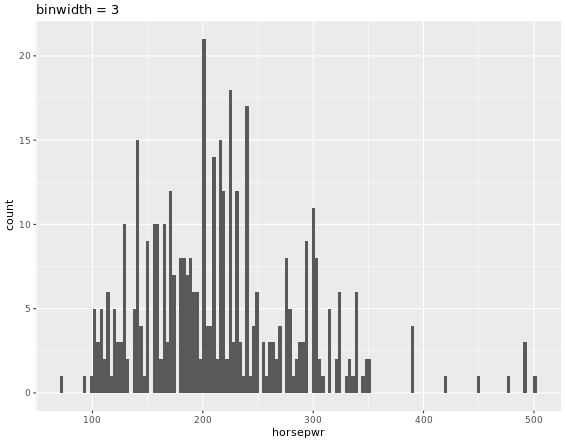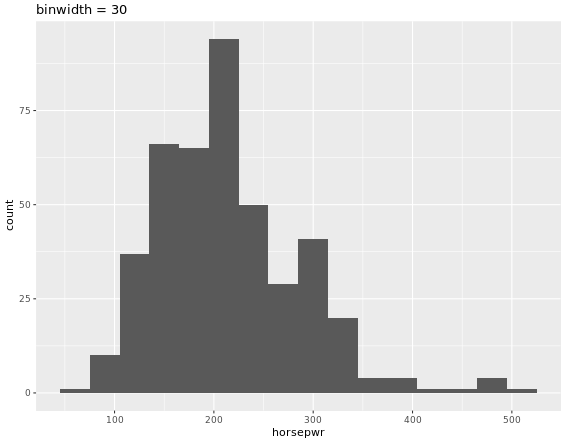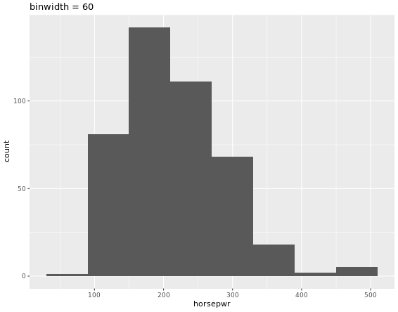
# Compute groupwise measures of spread
gap2007 %>%
group_by(continent) %>%
summarize(sd(lifeExp),
IQR(lifeExp),
n())
# Generate overlaid density plots
gap2007 %>%
ggplot(aes(x = lifeExp, fill = continent)) +
geom_density(alpha = 0.3)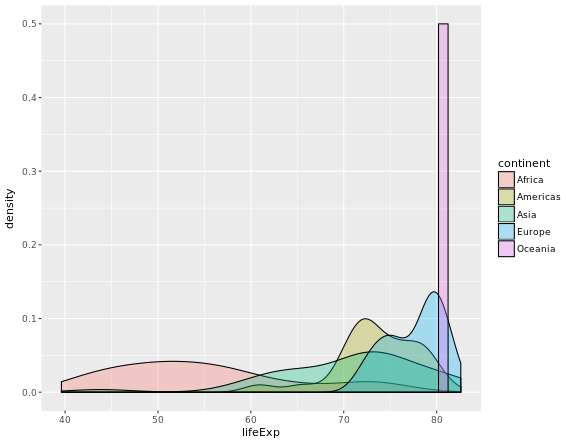
Highly skewed distributions can make it very difficult to learn anything from a visualization. Transformations can be helpful in revealing the more subtle structure.
# Create density plot of old variable
gap2007 %>%
ggplot(aes(x = pop)) +
geom_density()
# Transform the skewed pop variable
gap2007 <- gap2007 %>%
mutate(log_pop = log(pop))
# Create density plot of new variable
gap2007 %>%
ggplot(aes(x = log_pop)) +
geom_density()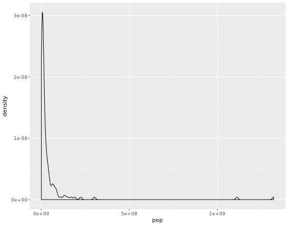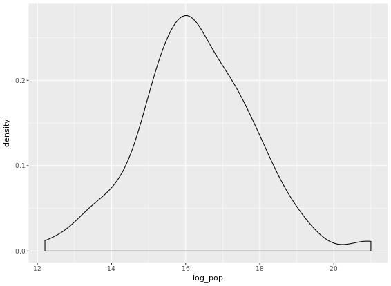
Identify Outliers
# Filter for Asia, add column indicating outliers
gap_asia <- gap2007 %>%
filter(continent == "Asia") %>%
mutate(is_outlier = lifeExp < 50)
# Remove outliers, create box plot of lifeExp
gap_asia %>%
filter(!is_outlier) %>%
ggplot(aes(x = 1, y = lifeExp)) +
geom_boxplot()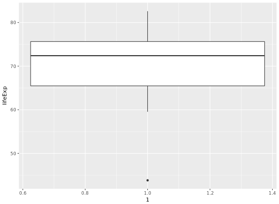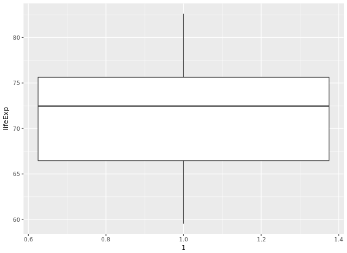
# Alternative plot: side-by-side box plots
email %>%
mutate(log_exclaim_mess = log(exclaim_mess + .01)) %>% # change log(0) which is -Inf to the quantity inside the log()
ggplot(aes(x = 1, y = log_exclaim_mess)) +
geom_boxplot() +
facet_wrap(~ spam)
# Alternative plot: Overlaid density plots
email %>%
mutate(log_exclaim_mess = log(exclaim_mess + .01)) %>%
ggplot(aes(x = log_exclaim_mess, fill = spam)) +
geom_density(alpha = 0.3)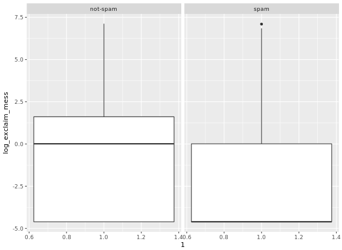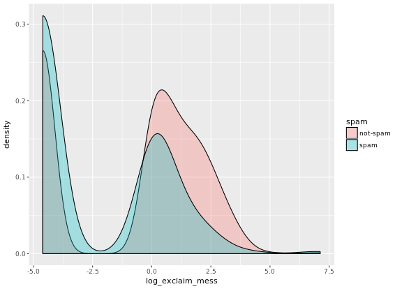
Boxplots as discretized/conditioned scatterplots
ggplot(data = ncbirths,
aes(x = cut(weeks, breaks = 5), y = weight)) +
geom_boxplot()
Transformation
# Scatterplot with coord_trans()
ggplot(data = mammals, aes(x = BodyWt, y = BrainWt)) +
geom_point() +
coord_trans(x = "log10", y = "log10")
# Scatterplot with scale_x_log10() and scale_y_log10()
ggplot(data = mammals, aes(x = BodyWt, y = BrainWt)) +
geom_point() +
scale_x_log10() + scale_y_log10()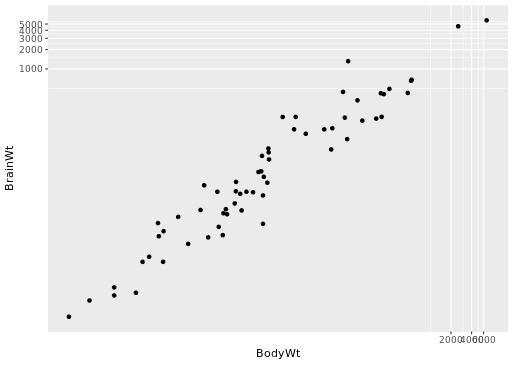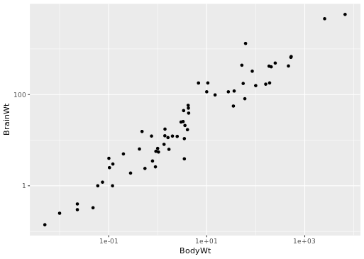
Correlation
The cor(x, y) function will compute the Pearson product-moment correlation between variables, x and y. Since this quantity is symmetric with respect to x and y, it doesn’t matter in which order you put the variables. At the same time, the cor() function is very conservative when it encounters missing data (e.g. NAs). The use argument allows you to override the default behavior of returning NA whenever any of the values encountered is NA. Setting the use argument to “pairwise.complete.obs” allows cor() to compute the correlation coefficient for those observations where the values of x and y are both not missing. This website gives a detailed introduction to cor() function.
By the way, group_by() function has always been used in R. It might be easier for you to understand the function if you take a look at an example here.
Fitting a linear model “by hand”
Recall the simple linear regression model:
Y = b0 + b1 * X
Two facts enable you to compute the slope b1 and intercept b0 of a simple linear regression model from some basic summary statistics. First, the slope can be defined as:
b1 = r(X,Y) * sY / sX where r(X,Y) represents the correlation (cor()) of X and Y and sX and sY represent the standard deviation (sd()) of X and Y, respectively.
Second, the point (x¯,y¯) is always on the least squares regression line, where x¯ and y¯ denote the average of x and y, respectively.
Fitting simple linear models
An lm() object contains a host of information about the regression model that you fit. There are various ways of extracting different pieces of information. The oef() function displays only the values of the coefficients. Conversely, the summary() function displays not only that information, but a bunch of other information, including the associated standard error and p-value for each coefficient, the R2, adjusted R2, and the residual standard error.
mod <- lm(wgt ~ hgt, data = bdims)
# Show the coefficients
coef(mod)
# Show the full output
summary(mod)The augment() function from the broom package can tidy linear model. It takes a model object as an argument and returns a data frame that contains the data on which the model was fit, along with several quantities specific to the regression model, including the fitted values, residuals, leverage scores, and standardized residuals.
A traditional way to return the fitted values (i.e. the y^’s) is to run the predict() function on the model object. This will return a vector of the fitted values. Note that predict() will take an optional newdata argument that will allow you to make predictions for observations that are not in the original data.
A newer alternative is the augment() function from the broom package, which returns a data.frame with the response varible (y), the relevant explanatory variables (the x’s), the fitted value (y^) and some information about the residuals (e). augment() will also take a newdata argument that allows you to make predictions.
Adding a regression line to a plot manually
# Add the line to the scatterplot
ggplot(data = bdims, aes(x = hgt, y = wgt)) +
geom_point() +
geom_abline(data = coefs,
aes(intercept = `(Intercept)`, slope = hgt),
color = "dodgerblue")
Assessing model fit
Calculate the stanard error of residuals/RMSE (Root mean squared error).
# Compute the mean of the residuals
mean(residuals(mod))
# Compute RMSE
sqrt(sum(residuals(mod)^2) / df.residual(mod))Leverage
The leverage of an observation in a regression model is defined entirely in terms of the distance of that observation from the mean of the explanatory variable. That is, observations close to the mean of the explanatory variable have low leverage, while observations far from the mean of the explanatory variable have high leverage. Points of high leverage may or may not be influential. The influence of an observation depends not only on its leverage, but also on the magnitude of its residual. Recall that while leverage only takes into account the explanatory variable (x), the residual depends on the response variable (y) and the fitted value (y^).
# Augment the model
augmented_mod <- augment(mod)
glimpse(augmented_mod)
# scatterplot, with color
data_space <- ggplot(augmented_mod, aes(x = wheels, y = totalPr, color = cond)) +
geom_point()
# single call to geom_line()
data_space +
geom_line(aes(y = .fitted))R-squared vs. adjusted R-squared
Here is a website about indexes intro which is pretty helpful.
For interaction plot,
# interaction plot
ggplot(mario_kart, aes(y = totalPr, x = duration, color = cond)) +
geom_point() +
geom_smooth(method = "lm", se = FALSE)
slr <- ggplot(mario_kart, aes(y = totalPr, x = duration)) +
geom_point() +
geom_smooth(method = "lm", se = 0)
# model with one slope
lm(totalPr ~ duration, data = mario_kart)
# plot with two slopes
slr + aes(color = cond)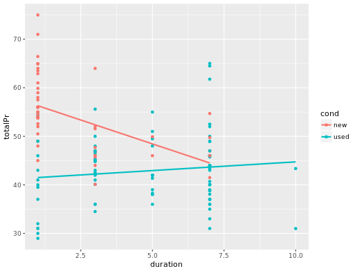
Models in 3D
An alternative way to visualize a multiple regression model with two numeric explanatory variables is as a plane in three dimensions. This is possible in R using the plotly package.
Much like ggplot(), the plot_ly() function will allow you to create a plot object with variables mapped to x, y, and z aesthetics. The add_markers() function is similar to geom_point() in that it allows you to add points to your 3D plot. Note that plot_ly uses the pipe (%>%) operator to chain commands together.
# draw the 3D scatterplot
p <- plot_ly(data = mario_kart, z = ~totalPr, x = ~duration, y = ~startPr, opacity = 0.6) %>%
add_markers()
# draw the plane
p %>%
add_surface(x = ~x, y = ~y, z = ~plane, showscale = FALSE)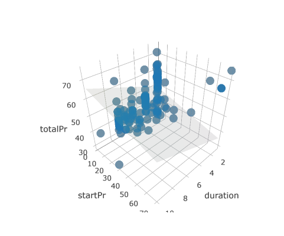
# draw the 3D scatterplot
p <- plot_ly(data = mario_kart, z = ~totalPr, x = ~duration, y = ~startPr, opacity = 0.6) %>%
add_markers(color = ~cond)
# draw two planes
p %>%
add_surface(x = ~x, y = ~y, z = ~plane0, showscale = FALSE) %>%
add_surface(x = ~x, y = ~y, z = ~plane1, showscale = FALSE)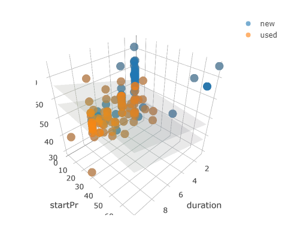
ggplot2 Visualization
An awesome website was recommended to you ggplot2
- Limitations of base plot functions
- Plot does not get redrawn
- Plot is drawn as an image
- Need to manually add legend
- No unified framework for plotting
- All Grammatical Elements:
- Data, the dataset being plotted
- Aesthetics, the scales onto which we map our data
- Geometries, the visual elements used for our data
- Facets, plotting small multiples
- Statistics, representations of our data to aid understanding
- Coordinates, the space on which the data will be plotted
- Themes, all non-data ink
- Typical Aesthetics
- x, X axis position
- y, y axis position
- colour, colour of dots, outlines of other shapes
- fill, fill colour
- size, diameter of points, thickness of lines
- alpha, transparency
- linetype, line dash pattern
- labels, text on a plot or axes
- shape, shape

## Aesthetic Description
## 1 x X axis position
## 2 y Y axis position
## 3 colour Colour of dots, outlines of other shapes
## 4 fill Fill colour
## 5 size Diameter of points, thickness of lines
## 6 alpha Transparency
## 7 linetype Line dash pattern
## 8 labels Text on a plot or axes
## 9 shape Shapeggplot(mtcars, aes(x = cyl, y = mpg, col = disp, size = disp, shape = categorical column, shape = 1, size = 4)) +
geom_point(alpha = 0.4, position = "jitter") + # alpha means the transparency of discrete points, 0-1, jitter expands the points more evenly, or you can just use geom_jitter()
geom_smooth(aes(group = 1), method = "lm", se = FALSE) # if you do not want any error shading, you can set se = FALSE, lm means lineal model method in scatter plot, group = 1 tells ggplot to draw a single linear model through all the points in different colors.Note that you can also call aes() within the geom_point() function. Which shape to use? The default geom_point() uses shape = 19 (a solid circle with an outline the same colour as the inside). Good alternatives are shape = 1 (hollow) and shape = 16 (solid, no outline). These all use the col aesthetic (don’t forget to set alpha for solid points). A really nice alternative is shape = 21 which allows you to use both fill for the inside and col for the outline! This is a great little trick for when you want to map two aesthetics to a dot.
ggplot(mtcars, aes(x = wt, y = mpg, fill = cyl, col = am, shape = 21, size = 4, label = cyl)) +
geom_point(alpha = 0.6) +
geom_text()This time you’ll use these arguments to set attributes of the plot, not aesthetics. However, there are some pitfalls you’ll have to watch out for: these attributes can overwrite the aesthetics of your plot! A word about shapes: In the exercise “All about aesthetics, part 2”, you saw that shape = 21 results in a point that has a fill and an outline. Shapes in R can have a value from 1-25. Shapes 1-20 can only accept a color aesthetic, but shapes 21-25 have both a color and a fill aesthetic.
ggplot(mtcars, aes(x=wt, y=mpg, col=cyl)) +
geom_point(col = my_color)
# The col setting in geom_point can overwrite the aesthetics of plotA word about hexadecimal colours: Hexadecimal, literally “related to 16”, is a base-16 alphanumeric counting system. Individual values come from the ranges 0-9 and A-F. This means there are 256 possible two-digit values (i.e. 00 - FF). Hexadecimal colours use this system to specify a six-digit code for Red, Green and Blue values (“#RRGGBB”) of a colour (i.e. Pure blue: “#0000FF”, black: “#000000”, white: “#FFFFFF”). R can accept hex codes as valid colours.
ggplot(mtcars, aes(x = wt, y = mpg, fill = cyl)) +
geom_text(rownames(mtcars), col = "red")
# Remember specify characters with quotation makrsval = c("#E41A1C", "#377EB8")
lab = c("Manual", "Automatic")
cyl.am +
geom_bar(position = "dodge") +
scale_x_discrete("Cylinders") +
scale_y_continuous("Number") +
scale_fill_manual("Transmission",
values = val,
labels = lab)Explaination to the code above: scale_x_discrete() takes as its only argument the x-axis label: “Cylinders”. scale_y_continuous() takes as its only argument the y-axis label: “Number”. scale_fill_manual() fixes the legend. The first argument is the title of the legend: “Transmission”. Next, values and labels are set to predefined values for you. These are the colors and the labels in the legend. The result of above code will be like this:
To make a univariable plot with ggplot2, we can set y = o in aesthetics. So far you’ve focused on scatter plots since they are intuitive, easily understood and very common. A major consideration in any scatter plot is dealing with overplotting. You’ll encounter this topic again in the geometries layer, but you can already make some adjustments here.
- You’ll have to deal with overplotting when you have:
- Large datasets,
- Imprecise data and so points are not clearly separated on your plot (you saw this in the video with the iris dataset),
- Interval data (i.e. data appears at fixed values), or
- Aligned data values on a single axis.
- Large datasets
- Aligned data values on a single axis
One very common technique that I’d recommend to always use when you have solid shapes it to use alpha blending (i.e. adding transparency). An alternative is to use hollow shapes. These are adjustments to make before even worrying about positioning.
ggplot(mtcars, aes(x = wt, y = mpg, col = cyl)) +
geom_point(size = 4, shape = 1, alpha = 0.6)
# shape = 1 will change points to hollow points which is good, alpha can improve the overplottingThe plot will be like:

37 Geometries in ggplot2
- abline (scatter plot)
- area
- bar (bar plot)
- bin2d
- blank
- boxplot
- contour
- crossbar
- density
- density2d
- dotplot
- errorbar (bar plot)
- errorbarh
- freqpoly
- hex
- histogram (bar plot)
- hline
- jitter (scatter plot)
- line (line plot)
- linerange
- map
- path
- point (scatter plot)
- Essential: x, y
- Optional: alpha, colour, fill, shape, size
- pointrange
- polygon
- quantile
- raster
- rect
- ribbon
- rug
- segment
- smooth
- step
- text
- tile
- violin
- vline
# 1 - Define posn_d with position_dodge()
posn_d <- position_dodge(width = 0.2)
# 2 - Use posn_d as position and adjust alpha to 0.6
ggplot(mtcars, aes(x = cyl, fill = am)) +
geom_bar(position = posn_d, alpha = 0.6)Result would be like:
ggplot(mtcars, aes(mpg, col = cyl)) +
geom_freqpoly(binwidth = 1, position = "identity")
# Add the recess periods
ggplot(economics, aes(x = date, y = unemploy/pop)) +
geom_rect(data = recess,
aes(xmin = begin, xmax = end, ymin = -Inf, ymax = +Inf),
inherit.aes = FALSE, fill = "red", alpha = 0.2) +
geom_line()# Make it easy to read
ggplot(ChickWeight, aes(x = Time, y = weight, col = Diet)) +
geom_line(aes(group = Chick), alpha = 0.3) +
geom_smooth(lwd = 2, se = FALSE)
While qplot() can do some easy plots like that:
# qplot() with geom set to jitter manually
qplot(factor(cyl), factor(vs), data = mtcars, geom = "jitter")
# "True" dot plot, with geom_dotplot():
ggplot(mtcars, aes(cyl, wt, fill = am)) +
geom_dotplot(binaxis = "y", stackdir = "center")
# add facet_grid() layer
ggplot(titanic, aes(x = Pclass, fill = Sex)) +
geom_bar(position = "dodge") +
facet_grid(. ~ Survived)
# Define an object for position jitterdodge, to use below
posn.jd <- position_jitterdodge(0.5, 0, 0.6)
# but use the position object defined above
ggplot(titanic, aes(x = Pclass, y = Age, color = Sex)) +
geom_point(size = 3, alpha = 0.5, position = posn.jd) +
facet_grid(. ~ Survived)Two figures are compared:
Advanced plotting with ggplot2

ggplot(mtcars, aes(x = wt, y = mpg, col = factor(cyl))) +
geom_point() +
stat_smooth(method = "lm", se = FALSE)
# 2 - Plot 1, plus another stat_smooth() containing a nested aes()
ggplot(mtcars, aes(x = wt, y = mpg, col = factor(cyl))) +
geom_point() +
stat_smooth(method = "lm", se = FALSE) +
stat_smooth(method = "lm", se = FALSE, aes(group = 1))In the previous exercise we used se = FALSE in stat_smooth() to remove the 95% Confidence Interval. Here we’ll consider another argument, span, used in LOESS smoothing, and we’ll take a look at a nice scenario of properly mapping different models.
ggplot(mtcars, aes(x = wt, y = mpg, col = factor(cyl))) +
geom_point() +
stat_smooth(method = "lm", se = FALSE) +
stat_smooth(method = "loess", aes(group = 1),
se = FALSE, col = "black", span = 0.7)
# Set col to "All", inside the aes layer of stat_smooth()
ggplot(mtcars, aes(x = wt, y = mpg, col = factor(cyl))) +
geom_point() +
stat_smooth(method = "lm", se = FALSE) +
stat_smooth(method = "loess",
# Add col inside aes()
aes(group = 1, col = "All"),
# Remove the col argument below
se = FALSE, span = 0.7)
# Add scale_color_manual to change the colors
myColors <- c(brewer.pal(3, "Dark2"), "black")
ggplot(mtcars, aes(x = wt, y = mpg, col = factor(cyl))) +
geom_point() +
stat_smooth(method = "lm", se = FALSE, span = 0.7) +
stat_smooth(method = "loess",
aes(group = 1, col="All"),
se = FALSE, span = 0.7) +
scale_color_manual("Cylinders", values = myColors)Focus on the color because scale_color_brewer on default have a maximum 9 for palette Blues.
ggplot(Vocab, aes(x = education, y = vocabulary, col = factor(year))) +
stat_smooth(method = "lm", se = FALSE) + # smooth
scale_color_brewer() # colors
# Plot 5: Add the group aes, specify alpha and size
ggplot(Vocab, aes(x = education, y = vocabulary, col = year, group = factor(year))) +
stat_smooth(method = "lm", se = FALSE, alpha = 2, size = 2) +
scale_color_gradientn(colors = brewer.pal(9, "YlOrRd"))Another useful stat function is stat_sum(). This function calculates the total number of overlapping observations and is another good alternative to overplotting.
# Jittering only
p <- ggplot(Vocab, aes(x = education, y = vocabulary)) +
geom_jitter(alpha = 0.2)
# Add stat_sum will map overall count of each dot onto size
p +
stat_sum()
# Set size range of the dots
p +
stat_sum() +
scale_size(range = c(1, 10))
library(ggplot2)
library(Hmisc)
wt.cyl.am <- ggplot(mtcars, aes(x = cyl, y = wt, col = am, fill = am, group = am))
posn.d <- position_dodge(width = 0.1)
posn.jd <- position_jitterdodge(jitter.width = 0.1, dodge.width = 0.2)
posn.j <- position_jitter(width = 0.2)
# Plot 1: Jittered, dodged scatter plot with transparent points
wt.cyl.am +
geom_point(position = posn.jd, alpha = 0.6)
# Plot 2: Mean and SD - the easy way
wt.cyl.am +
geom_point(position = posn.jd, alpha = 0.6) +
stat_summary(fun.data = mean_sdl, fun.args = list(mult = 1), position = posn.d)
# Plot 3: Mean and 95% CI - the easy way
wt.cyl.am +
geom_point(position = posn.jd, alpha = 0.6) +
stat_summary(fun.data = mean_cl_normal, position = posn.d)
# Plot 4: Mean and SD - with T-tipped error bars - fill in ___
wt.cyl.am +
stat_summary(geom = "point", fun.y = mean,
position = posn.d) +
stat_summary(geom = "errorbar", fun.data = mean_sdl,
position = posn.d, fun.args = list(mult = 1), width = 0.1)# Add three stat_summary calls to wt.cyl.am
wt.cyl.am +
stat_summary(geom = "linerange", fun.data = med_IQR,
position = posn.d, size = 3) +
stat_summary(geom = "linerange", fun.data = gg_range,
position = posn.d, size = 3,
alpha = 0.4) +
stat_summary(geom = "point", fun.y = median,
position = posn.d, size = 3,
col = "black", shape = "X")p <- ggplot(mtcars, aes(x = wt, y = hp, col = am)) + geom_point() + geom_smooth()
# limits to set the aesthetic limit, expand is to ensure the data is placed some distance away from axes
p + scale_x_continuous(limits = c(3, 6), expand = c(0, 0))
# Add coord_cartesian(): the proper way to zoom in
p + coord_cartesian(xlim = c(3, 6))# Complete basic scatter plot function
base.plot <- ggplot(iris, aes(x = Sepal.Length, y = Sepal.Width, col = Species)) +
geom_jitter() +
geom_smooth(method = "lm", se = FALSE)
base.plot
# Fix aspect ratio (1:1) of base.plot
base.plot + coord_equal(ratio = 1)
base.plot + coord_equal(ratio = 2)
base.plot + coord_equal(ratio = 3)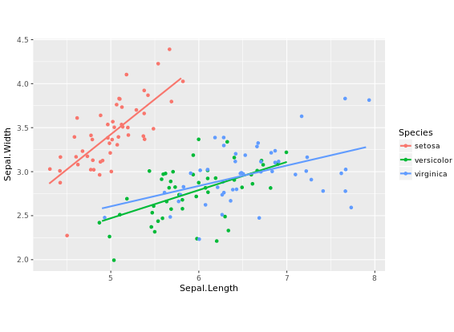
wide.bar <- ggplot(mtcars, aes(x = 1, fill = cyl)) +
geom_bar()
# Convert wide.bar to pie chart
wide.bar +
coord_polar(theta = "y")
# Create stacked bar plot: thin.bar
thin.bar <- ggplot(mtcars, aes(x = 1, fill = cyl)) +
geom_bar(width = 0.1) +
scale_x_continuous(limits = c(0.5, 1.5))
# Convert thin.bar to "ring" type pie chart
thin.bar +
coord_polar(theta = "y")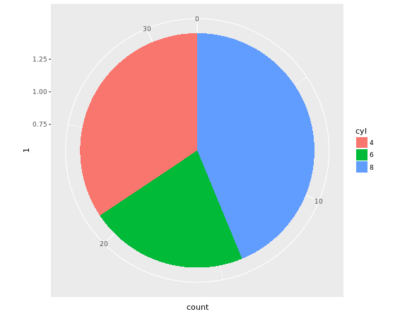
# Basic scatter plot
p <- ggplot(mtcars, aes(x = wt, y = mpg)) +
geom_point()
p +
facet_grid(am ~ .)
# 2 - Separate columns according to column cylinders, cyl
p +
facet_grid(. ~ cyl)
# 3 - Separate by both columns and rows
p +
facet_grid(am ~ cyl)For many variables
# Code to create the cyl_am col and myCol vector
mtcars$cyl_am <- paste(mtcars$cyl, mtcars$am, sep = "_")
myCol <- rbind(brewer.pal(9, "Blues")[c(3,6,8)],
brewer.pal(9, "Reds")[c(3,6,8)])
ggplot(mtcars, aes(x = wt, y = mpg, col = cyl_am, size = disp)) +
geom_point() +
scale_color_manual(values = myCol) +
facet_grid(gear ~ vs)
# Facet rows accoding to vore which is pretty hard to read, right?
p +
facet_grid(vore ~ .)
# Specify scale and space arguments to free up rows
p +
facet_grid(vore ~ ., scale = "free_y", space = "free_y")
Themes layer
Let’s look at an example first. How to transfer from left to right image?
Rectangle
We can add theme element to original plot:
myPink <- "#FEE0D2"
# Theme to remove all rectangles
no_panels <- theme(rect = element_blank())
# Remove plot panels and legend and add a border, z is orginal figure
z +
no_panels +
theme(plot.background = element_rect(fill = myPink, color = "black", size = 3))Line
Next, you will think about removing grid lines in the previous figure. For each of the arguments that specify lines, use element_line() to create red axes and tick marks.
# z is previous figure code
z +
theme(panel.grid = element_blank(),
axis.line = element_line(color = "red"),
axis.ticks = element_line(color = "red"))Text
Now, we can make the text on your plot prettier and easier to spot. You can do this through the element_text() function and appropriate arguments inside the theme() function. The plot you’ve created previously is available as z.
z +
theme(strip.text = element_text(size = 16, color = myRed),
axis.title = element_text(color = myRed, hjust = 0, face = "italic"),
axis.text = element_text(color = "black"))Legend
The themes layer also allows you to specify the appearance and location of legends. Previous code is available as z.
# Move legend by position
z +
theme(legend.position = c(0.85, 0.85))
# Change direction
z +
theme(legend.direction = "horizontal")
# Change location by name
z +
theme(legend.position = "bottom")
# Remove legend entirely
z +
theme(legend.position = "none")
Positions
The different rectangles of your plot have spacing between them. There’s spacing between the facets, between the axis labels and the plot rectangle, between the plot rectangle and the entire panel background, etc. The last plot you created in the previous exercise, without a legend, is available as z.
# Increase spacing between facets
library(grid)
z + theme(panel.spacing.x = unit(2, "cm"))
# Adjust the plot margin
z + theme(panel.spacing.x = unit(2, "cm"), plot.margin = unit(c(1,2,1,1), "cm"))Recycling Themes
If you are making many plots and wanna keep consistency in style, you might wanna apply specific theme everywhere because building your themes every time from scratch can become a pain and unnecessarily bloat your scripts. theme_update() updates the default theme used by ggplot2. The arguments for theme_update() are the same as for theme(). When you call theme_update() and assign it to an object (e.g. called old), that object stores the current default theme, and the arguments update the default theme. If you want to restore the previous default theme, you can get it back by using theme_update() again. In the following exercises, we’ll practice different ways of managing, updating and saving themes.
# Update the theme as default theme
old <- theme_update(panel.background = element_blank(),
legend.key = element_blank(),
legend.background = element_blank(),
strip.background = element_blank(),
plot.background = element_rect(fill = myPink, color = "black", size = 3),
panel.grid = element_blank(),
axis.line = element_line(color = "red"),
axis.ticks = element_line(color = "red"),
strip.text = element_text(size = 16, color = myRed),
axis.title.y = element_text(color = myRed, hjust = 0, face = "italic"),
axis.title.x = element_text(color = myRed, hjust = 0, face = "italic"),
axis.text = element_text(color = "black"),
legend.position = "none")
# 3 - Display the plot z2 - new default theme used
z2
# 4 - Restore the old default theme
theme_set(old)
Exploring ggthemes
Here is a nice website you can refer to, All your figure are belong to us. The author almost made a list of all whay you need in his/her website.
library(ggthemes)
z2
# Apply theme_tufte(), plot additional modifications
custom_theme <- theme_tufte() +
theme(legend.position = c(0.9, 0.9),
legend.title = element_text(face = "italic", size = 12),
axis.title = element_text(face = "bold", size = 14))
# Draw the customized plot
z2 + custom_theme
# Use theme_set to set custom theme as default
theme_set(custom_theme)Bar Plots
“dynamite plots” (bar plots with error bars) are not well suited for their intended purpose of depicting distributions. If you really want error bars on bar plots, you can still get that. However, you’ll need to set the positions manually. A point geom will typically serve you much better. For base layer:
m <- ggplot(mtcars, aes(x = cyl, y = wt))
# Draw dynamite plot
m +
stat_summary(fun.y = mean, geom = "bar", fill = "skyblue") +
stat_summary(fun.data = mean_sdl, fun.args = list(mult = 1), geom = "errorbar", width = 0.1)
The plot is not that good, right? Let’s handle it.
m <- ggplot(mtcars, aes(x = cyl,y = wt, col = am, fill = am))
# Plot 2: Set position dodge in each stat function which does not solve problem
m +
stat_summary(fun.y = mean, geom = "bar", position = "dodge") +
stat_summary(fun.data = mean_sdl, fun.args = list(mult = 1),
geom = "errorbar", width = 0.1, position = "dodge")
# Set your dodge posn manually
posn.d <- position_dodge(0.9)
# Plot 3: Redraw dynamite plot
m +
stat_summary(fun.y = mean, geom = "bar", position = posn.d) +
stat_summary(fun.data = mean_sdl, fun.args = list(mult = 1), geom = "errorbar", width = 0.1, position = posn.d)If it is appropriate to use bar plots (see the video for a discussion!), then it would also be nice to give an impression of the number of values in each group. stat_summary() doesn’t keep track of the count. stat_sum() does (that’s the whole point), but it’s difficult to access. In this case, the most straightforward thing to do is calculate exactly what we want to plot beforehand. For this exercise we’ve created a summary data frame called mtcars.cyl which contains the average (wt.avg), standard deviations (sd) and count (n) of car weights, according to cylinders, cyl. It also contains the proportion (prop) of each cylinder represented in the entire dataset. Use the console to familiarize yourself with the mtcars.cyl data frame.
# Base layers
m <- ggplot(mtcars.cyl, aes(x = cyl, y = wt.avg))
# Plot 1: Draw bar plot with geom_bar
m + geom_bar(stat = "identity", fill = "skyblue")
# Plot 2: Draw bar plot with geom_col
m + geom_col(fill = "skyblue")
# Plot 3: geom_col with variable widths.
m + geom_col(fill = "skyblue", width = mtcars.cyl$prop)
# Plot 4: Add error bars
m +
geom_col(fill = "skyblue", width = mtcars.cyl$prop) +
geom_errorbar(aes(ymin = wt.avg - sd, ymax = wt.avg + sd), width = 0.1)
Pie Charts
Convert bar chart to pie chart:
# Plot 1
ggplot(mtcars, aes(x = factor(1), fill = am)) +
geom_bar(position = "fill") +
facet_grid(. ~ cyl) + # Facets
coord_polar(theta = "y") + # Coordinates
theme_void()
# Plot 2
ggplot(mtcars, aes(x = factor(1), fill = am)) +
geom_bar(position = "fill", width = 1) +
facet_grid(. ~ cyl) + # Facets
coord_polar(theta = "x") + # Coordinates
theme_void()
# Plot 3
ggplot(mtcars, aes(x = factor(1), fill = am)) +
geom_bar(position = "fill", width = 1) +
facet_grid(. ~ cyl) + # Facets
coord_polar(theta = "y") + # Coordinates
# Plot 4
ggplot(mtcars, aes(x = factor(1), fill = am)) +
geom_bar(position = "fill", width = 1) +
facet_grid(. ~ cyl) + # Facets
coord_polar(theta = "y") + # Coordinates
theme_void()The trick is to use a parallel coordinates plot. Each variable is plotted on its own parallel axis. Individual observations are connected with lines, colored according to a variable of interest. This is a surprisingly useful visualization since we can combine many variables, even if they are on entirely different scales.
A word of caution though: typically it is very taboo to draw lines in this way. It’s the reason why we don’t draw lines across levels of a nominal variable - the order, and thus the slope of the line, is meaningless. Parallel plots are a (very useful) exception to the rule! But to be honest, i do not know much about this plot. To me, it is too complicated and meaningless when you first see it. It says it is an excellent example of an exploratory plot. In case i will explore it in the future, i will record it here.
# Parallel coordinates plot using GGally
library(GGally)
# All columns except am
group_by_am <- 9
my_names_am <- (1:11)[-group_by_am]
# Basic parallel plot - each variable plotted as a z-score transformation
ggparcoord(mtcars, my_names_am, groupColumn = group_by_am, alpha = 0.8)Plot Matrix
Another great example is a plot matrix. GGally::ggpairs(mtcars2) will produce the plot of a selection of the mtcars dataset, mtcars2.
Heat Maps
Just for exploratory thinking of your data, not good for publication though.
# Create color palette
myColors <- brewer.pal(9, "Reds")
# Build the heat map using geom_tile
ggplot(barley, aes(x = year, y = variety, fill = yield)) +
geom_tile() + # Geom layer
facet_wrap( ~ site, ncol = 1) + # ensure there is just one column
scale_fill_gradientn(colors = myColors) # Adjust colors
Heat maps alternatives
There are several alternatives to heat maps. The best choice really depends on the data and the story you want to tell with this data.
# Line plot; check group argument meaning
ggplot(barley, aes(x = year, y = yield, col = variety, group = variety)) +
geom_line() +
facet_wrap( ~ site, nrow = 1)
You can use dodged error bars or you can use overlapping transparent ribbons. We’ll try to recreate the second option, the transparent ribbons here.
# Create overlapping ribbon plot from scratch
ggplot(barley, aes(x = year, y = yield, col = site, fill = site, group = site)) +
stat_summary(fun.y = mean, geom = "line") +
stat_summary(fun.data = mean_sdl, fun.args = list(mult = 1), geom = "ribbon", col = NA, alpha = 0.1)
Case Study
# Age colored by BMI, binwidth = 1
ggplot(adult, aes (x = SRAGE_P, fill= factor(RBMI))) +
geom_histogram(binwidth = 1)
When we introduced histograms we focused on univariate data, which is exactly what we’ve been doing here. However, when we want to explore distributions further there is much more we can do. For example, there are density and frequency plots.
# The color scale used in the plot
BMI_fill <- scale_fill_brewer("BMI Category", palette = "Reds")
# Theme to fix category display in faceted plot
fix_strips <- theme(strip.text.y = element_text(angle = 0, hjust = 0, vjust = 0.1, size = 14),
strip.background = element_blank(),
legend.position = "none")
# Histogram, add BMI_fill and customizations
ggplot(adult, aes (x = SRAGE_P, fill= factor(RBMI))) +
geom_histogram(binwidth = 1) +
fix_strips +
BMI_fill +
facet_grid(RBMI ~ .) +
theme_classic()
In the previous exercise we looked at different ways of showing the absolute count of multiple histograms. This is fine, but density would be a more useful measure if we wanted to see how the frequency of one variable changes across another.
# Plot 1 - Count histogram
ggplot(adult, aes (x = SRAGE_P, fill= factor(RBMI))) +
geom_histogram(binwidth = 1) +
BMI_fill
# Plot 2 - Density histogram
ggplot(adult, aes (x = SRAGE_P, fill= factor(RBMI))) +
geom_histogram(aes(y = ..density..), binwidth = 1) +
BMI_fill
# Plot 3 - Faceted count histogram
ggplot(adult, aes (x = SRAGE_P, fill= factor(RBMI))) +
geom_histogram(binwidth = 1) +
BMI_fill +
facet_grid(RBMI ~ .)
# Plot 4 - Faceted density histogram
ggplot(adult, aes (x = SRAGE_P, fill= factor(RBMI))) +
geom_histogram(aes(y = ..density..), binwidth = 1) +
BMI_fill +
facet_grid(RBMI ~ .)
# Plot 5 - Density histogram with position = "fill"
ggplot(adult, aes (x = SRAGE_P, fill= factor(RBMI))) +
geom_histogram(aes(y = ..density..), binwidth = 1, position = "fill") +
BMI_fill
# Plot 6 - The accurate histogram
ggplot(adult, aes (x = SRAGE_P, fill= factor(RBMI))) +
geom_histogram(aes(y = ..count../sum(..count..)), binwidth = 1, position = "fill") +
BMI_fill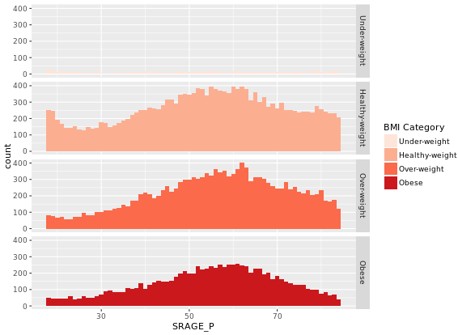
# An attempt to facet the accurate frequency histogram from before (failed)
ggplot(adult, aes (x = SRAGE_P, fill= factor(RBMI))) +
geom_histogram(aes(y = ..count../sum(..count..)), binwidth = 1, position = "fill") +
BMI_fill +
facet_grid(RBMI ~ .)
# Create DF with table()
DF <- table(adult$RBMI, adult$SRAGE_P)
# Use apply on DF to get frequency of each group
DF_freq <- apply(DF, 2, function(x) x/sum(x)) # 2 means 2 columns
# Load reshape2 and use melt on DF to create DF_melted
library(reshape2)
DF_melted <- melt(DF_freq)
# Change names of DF_melted
names(DF_melted) <- c("FILL", "X", "value")
# Add code to make this a faceted plot
ggplot(DF_melted, aes(x = X, y = value, fill = FILL)) +
geom_col(position = "stack") + # we can use geom_col instead of geom_bar(stat = "identity")
BMI_fill +
facet_grid(FILL ~ .) # FacetsMosaic Plots (Useful)
You may have already realized that bars are simply rectangles, but we don’t have easy access to the xmin and xmax aesthetics, but in geom_rect() we do! Likewise, we also have access to ymin and ymax.
# The initial contingency table
DF <- as.data.frame.matrix(table(adult$SRAGE_P, adult$RBMI))
# Create groupSum, xmax and xmin columns
DF$groupSum <- rowSums(DF)
DF$xmax <- cumsum(DF$groupSum)
DF$xmin <- DF$xmax - DF$groupSum
# The groupSum column needs to be removed; don't remove this line
DF$groupSum <- NULL
# Copy row names to variable X
DF$X <- row.names(DF)
# Melt the dataset
library(reshape2)
DF_melted <- melt(DF, id.vars = c("X", "xmin", "xmax"), variable.name = "FILL")
# dplyr call to calculate ymin and ymax - don't change
library(dplyr)
DF_melted <- DF_melted %>%
group_by(X) %>%
mutate(ymax = cumsum(value/sum(value)),
ymin = ymax - value/sum(value))
# Plot rectangles - don't change
library(ggthemes)
ggplot(DF_melted, aes(ymin = ymin,
ymax = ymax,
xmin = xmin,
xmax = xmax,
fill = FILL)) +
geom_rect(colour = "white") +
scale_x_continuous(expand = c(0,0)) +
scale_y_continuous(expand = c(0,0)) +
BMI_fill +
theme_tufte()
# Perform chi.sq test (RBMI and SRAGE_P)
results <- chisq.test(table(adult$RBMI, adult$SRAGE_P))
# Melt results$residuals and store as resid
resid <- melt(results$residuals)
# Change names of resid
names(resid) <- c("FILL", "X", "residual")
# merge the two datasets:
DF_all <- merge(DF_melted, resid)
# Update plot command
library(ggthemes)
ggplot(DF_all, aes(ymin = ymin,
ymax = ymax,
xmin = xmin,
xmax = xmax,
fill = residual)) +
geom_rect() +
scale_fill_gradient2() +
scale_x_continuous(expand = c(0,0)) +
scale_y_continuous(expand = c(0,0)) +
theme_tufte()
Since we’re not coloring according to BMI, we have to add group (and x axis) labels manually. The first two commands show how we got the the four positions for the y axis labels. First, we got the position of the maximum xmax values, i.e. at the very right end, stored as index. We want to calculate the half difference between each pair of ymax and ymin (e.g. (ymax - ymin)/2) at these index positions, then add this value to the ymin value. These positions are stored in the variable yposn.
# Position for labels on y axis (don't change)
index <- DF_all$xmax == max(DF_all$xmax)
DF_all$yposn <- DF_all$ymin[index] + (DF_all$ymax[index] - DF_all$ymin[index])/2
# Plot 1: geom_text for BMI (i.e. the fill axis)
p1 <- p %+% DF_all +
geom_text(aes(x = max(xmax),
y = yposn,
label = FILL),
size = 3, hjust = 1,
show.legend = FALSE)
p1
# Plot 2: Position for labels on x axis
DF_all$xposn <- DF_all$xmin + (DF_all$xmax - DF_all$xmin)/2
# geom_text for ages (i.e. the x axis)
p1 %+% DF_all +
geom_text(aes(x = xposn, label = x),
y = 1, angle = 90,
size = 3, hjust = 1,
show.legend = FALSE)Notice that the function, mosaicGG(), takes multiple arguments, such as the data frame of interest and the variables that you want to create the mosaic plot for. None of the arguments have default values, so you’ll have to specify all three if you want the mosaicGG() function to work.
# Load all packages
library(ggplot2)
library(reshape2)
library(dplyr)
library(ggthemes)
# BMI described by age (as previously seen)
mosaicGG(adult, X = "SRAGE_P", FILL = "RBMI")
# Poverty described by age
mosaicGG(adult, X = "SRAGE_P", FILL = "POVLL")
# mtcars: am described by cyl
mosaicGG(mtcars, "cyl", "am")
# Vocab: vocabulary described by education
library(carData)
mosaicGG(Vocab, "education", "vocabulary")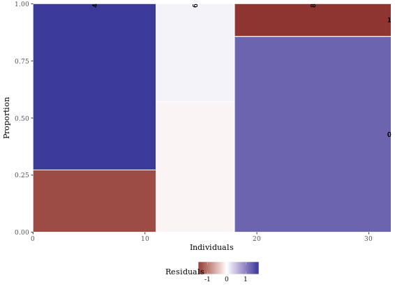
# Create movies_small
library(ggplot2movies)# movies data is in this package
library(ggplot2)
library(Hmisc)
set.seed(123)
movies_small <- movies[sample(nrow(movies), 1000), ] # a random sample of 1000 observations from the larger movies dataset
movies_small$rating <- factor(round(movies_small$rating))
# Build a scatter plot with mean and 95% CI
ggplot(movies_small, aes(x = rating, y = votes)) +
geom_point() +
stat_summary(fun.data = "mean_cl_normal", # depicts the mean and the 95% CI
geom = "crossbar",
width = 0.2,
col = "red") +
scale_y_log10() # transform the y scale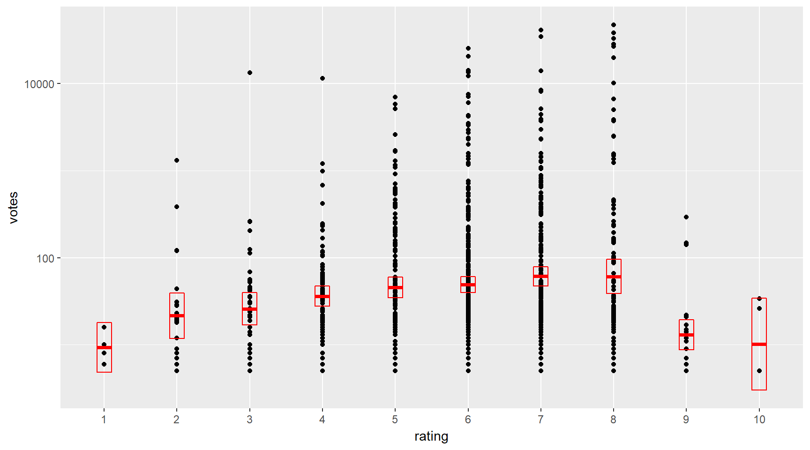
ggplot(diamonds, aes(x = carat, y = price, col = color)) +
geom_point(alpha = 0.5, size = 0.5, shape = 16) +
scale_x_log10(expression(log[10](Carat)), limits = c(0.1,10)) +
scale_y_log10(expression(log[10](Price)), limits = c(100,100000)) + # Transform both axes to log10 scales using the aforementioned scale functions
scale_color_brewer(palette = "YlOrRd") +
coord_equal() +
theme_classic()
Converse point plot to smooth plot:
# Add smooth layer and facet the plot
ggplot(diamonds, aes(x = carat, y = price, col = color)) +
stat_smooth(method = "lm") +
scale_x_log10(expression(log[10](Carat)), limits = c(0.1,10)) +
scale_y_log10(expression(log[10](Price)), limits = c(100,100000)) +
scale_color_brewer(palette = "YlOrRd") +
coord_equal() +
theme_classic()
d <- ggplot(movies_small, aes(x = rating, y = votes)) +
geom_point() +
geom_boxplot() +
stat_summary(fun.data = "mean_cl_normal",
geom = "crossbar",
width = 0.2,
col = "red")
# Untransformed plot
d
# the transformation happens before calculating the statistics
d + scale_y_log10()
# the transformation happens after calculating the statistics
d + coord_trans(y = "log10")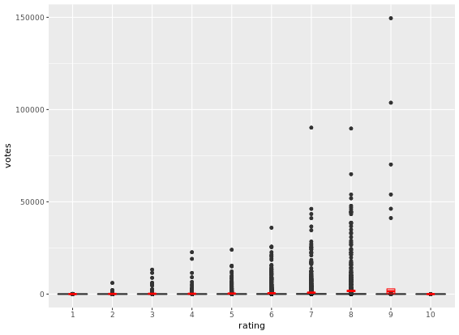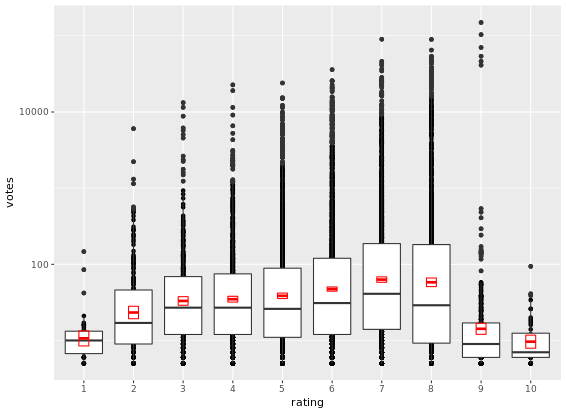
If you only have continuous variables, you can convert them into ordinal variables using any of the following functions:
cut_interval(x, n)makesngroups from vectorxwith equal range.cut_number(x, n)makesngroups from vectorxwith (approximately) equal numbers of observations.cut_width(x, width)makes groups of width width from vectorx.
This is useful when you want to summarize a complex scatter plot like the one shown in the plot1.
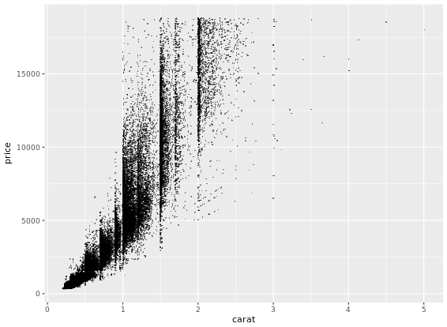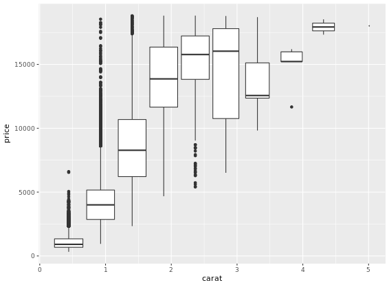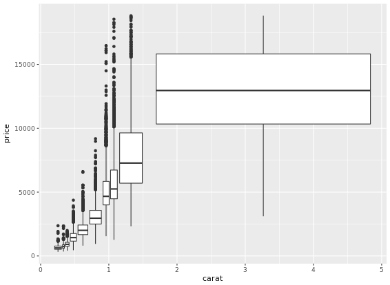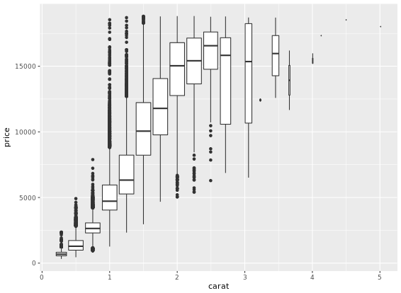
Density Plots
The following default parameters are used (you can specify these arguments both in density() as well as geom_density()):
bw = "nrd0", telling R which rule to use to choose an appropriate bandwidth.kernel = "gaussian", telling R to use the Gaussian kernel.
You could have a good understanding through ggplot2 Quick Reference: geom_rug.
# Calculating density: d
d <- density(test_data$norm)
# Use which.max() to calculate mode and specify x
mode <- d$x[which.max(d$y)]
# Finish the ggplot call
ggplot(test_data, aes(x = norm)) +
geom_rug() +
geom_density() +
geom_vline(xintercept = mode, col = "red")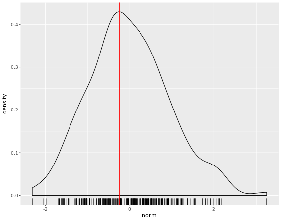
Now that you know how to create a empirical and theoretical density plot, we should compare them in a plot then.
fun_args <- list(mean = mean(test_data$norm), sd = sd(test_data$norm))
ggplot(test_data, aes(x = norm)) +
geom_histogram(aes(y = ..density..)) +
geom_density(col = "red") + # empirical
stat_function(fun = dnorm, args = fun_args, col = "blue") # theoretical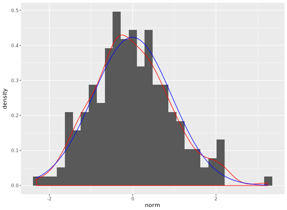
Adjusting density plots
There are three parameters that you may be tempted to adjust in a density plot:
- bw - the smoothing bandwidth to be used, see ?density for details
- adjust - adjustment of the bandwidth, see density for details
- kernel - kernel used for density estimation, defined as
- “g” = gaussian
- “r” = rectangular
- “t” = triangular
- “e” = epanechnikov
- “b” = biweight
- “c” = cosine
- “o” = optcosine
you’ll use a dataset containing only four points, small_data, so that you can see how these three arguments affect the shape of the density plot.
# Get the default bandwith
get_bw <- density(small_data$x)$bw
# Basic plotting object
p <- ggplot(small_data, aes(x = x)) +
geom_rug() +
coord_cartesian(ylim = c(0,0.5))
# Create three plots
p + geom_density()
p + geom_density(adjust = 0.25)
p + geom_density(bw = 0.25 * get_bw)
# Create two plots
p + geom_density(kernel = "r")
p + geom_density(kernel = "e")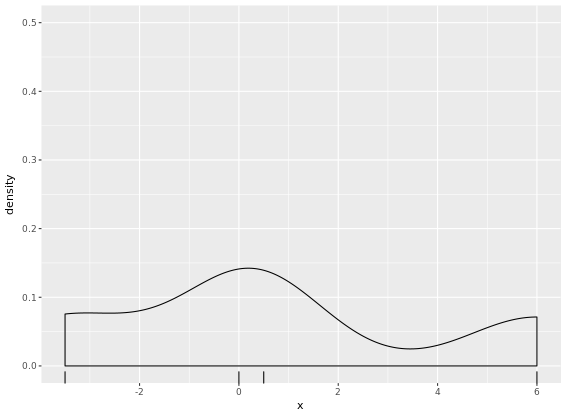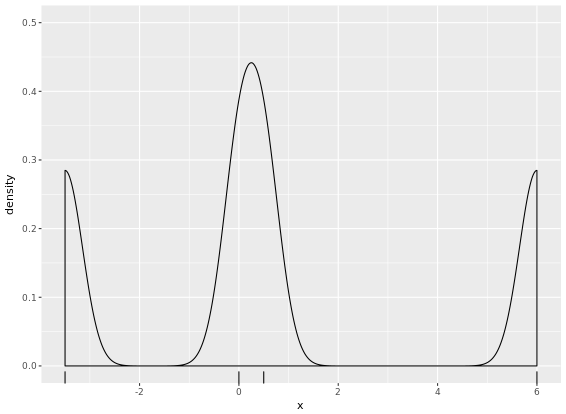 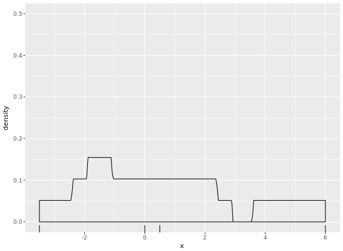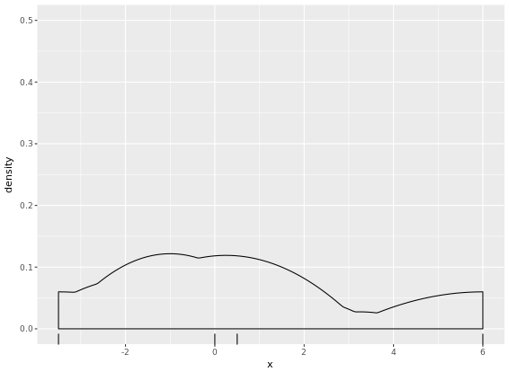
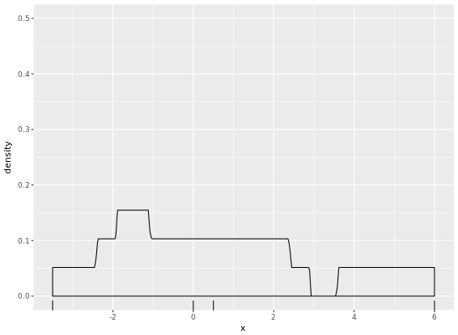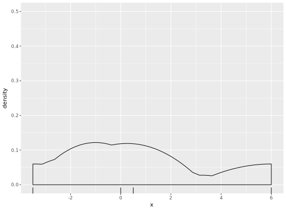
A drawback of showing a box plot per group, is that you don’t have any indication of the sample size, n, in each group, that went into making the plot. One way of dealing with this is to use a variable width for the box, which reflects differences in n. Here is an example:
ggplot(diamonds, aes(x = cut, y = price, col = color)) +
geom_boxplot(varwidth = T) +
facet_grid(. ~ color)
# Individual densities
ggplot(mammals[mammals$vore == "Insectivore", ], aes(x = sleep_total, fill = vore)) +
geom_density(col = NA, alpha = 0.35) +
scale_x_continuous(limits = c(0, 24)) +
coord_cartesian(ylim = c(0, 0.3))
# With faceting
ggplot(mammals, aes(x = sleep_total, fill = vore)) +
geom_density(col = NA, alpha = 0.35) +
scale_x_continuous(limits = c(0, 24)) +
coord_cartesian(ylim = c(0, 0.3)) +
facet_wrap( ~ vore, nrow = 2)
# Note that by default, the x ranges fill the scale
ggplot(mammals, aes(x = sleep_total, fill = vore)) +
geom_density(col = NA, alpha = 0.35) +
scale_x_continuous(limits = c(0, 24)) +
coord_cartesian(ylim = c(0, 0.3))
# Trim each density plot individually
ggplot(mammals, aes(x = sleep_total, fill = vore)) +
geom_density(col = NA, alpha = 0.35, trim = TRUE) +
scale_x_continuous(limits=c(0,24)) +
coord_cartesian(ylim = c(0, 0.3))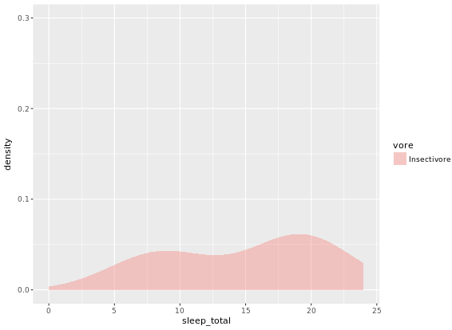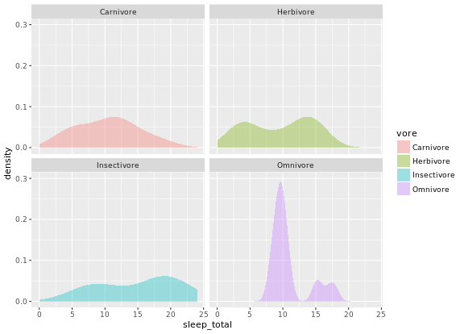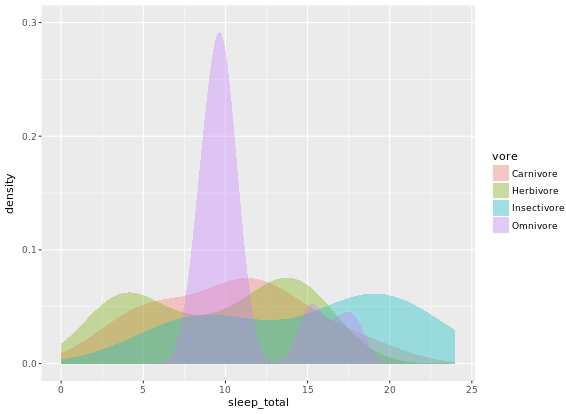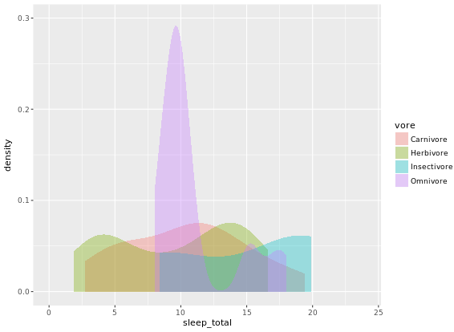
# Unweighted density plot from before
ggplot(mammals, aes(x = sleep_total, fill = vore)) +
geom_density(col = NA, alpha = 0.35) +
scale_x_continuous(limits = c(0, 24)) +
coord_cartesian(ylim = c(0, 0.3))
# Unweighted violin plot
ggplot(mammals, aes(x = vore, y = sleep_total, fill = vore)) +
geom_violin()
# Calculate weighting measure
library(dplyr)
mammals2 <- mammals %>%
group_by(vore) %>%
mutate(n = n() / nrow(mammals)) -> mammals
# Weighted density plot
ggplot(mammals2, aes(x = sleep_total, fill = vore)) +
geom_density(aes(weight = n), col = NA, alpha = 0.35) +
scale_x_continuous(limits = c(0, 24)) +
coord_cartesian(ylim = c(0, 0.3))
# Weighted violin plot
ggplot(mammals2, aes(x = vore, y = sleep_total, fill = vore)) +
geom_violin(aes(weight = n), col = NA) 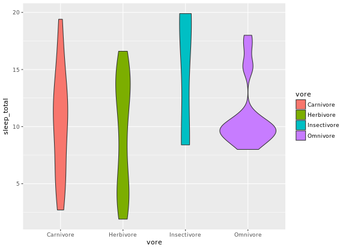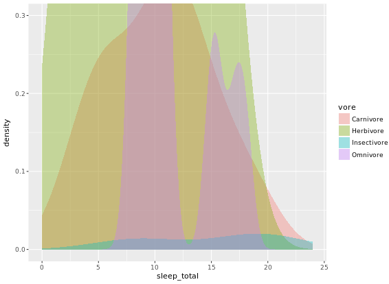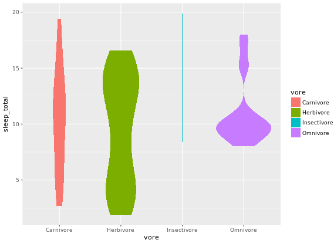
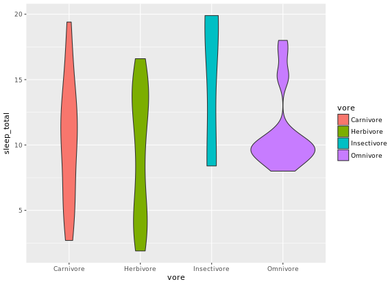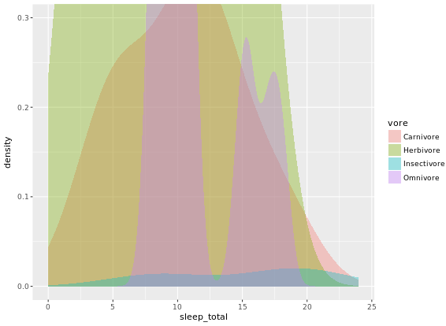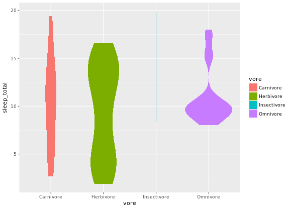
2D Density Plots
You can consider two orthogonal density plots in the form of a 2D density plot. Just like with a 1D density plot, you can adjust the bandwidth of both axes independently.
# Base layers
library(datasets)
p <- ggplot(faithful, aes(x = waiting, y = eruptions)) +
scale_y_continuous(limits = c(1, 5.5), expand = c(0, 0)) +
scale_x_continuous(limits = c(40, 100), expand = c(0, 0)) +
coord_fixed(60 / 4.5)
# 1 - Use geom_density_2d()
p + geom_density_2d()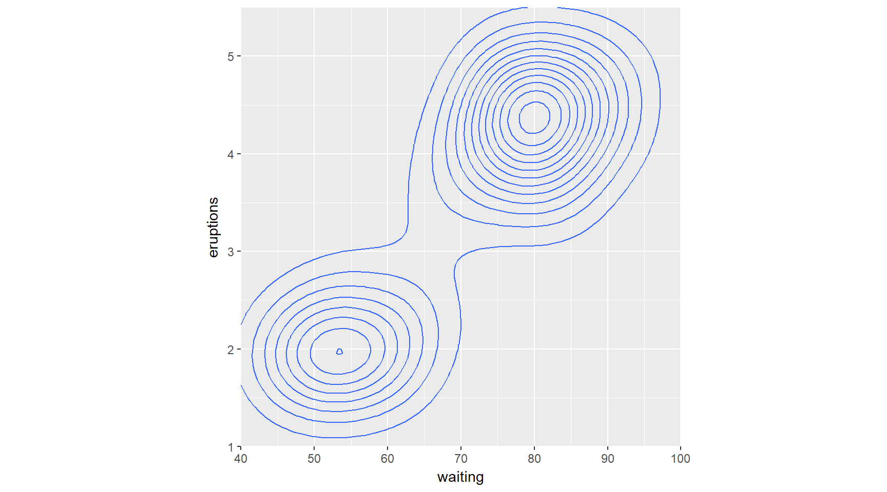
# 2 - Use stat_density_2d() with arguments
p + stat_density_2d(aes(col = ..level..), h = c(5, 0.5))
Here you’ll explore the viridis package. This package contains multi-hue color palettes suitable for continuous variables. The advantage of these scales is that instead of providing an even color gradient for a continuous scale, they highlight the highest values by using an uneven color gradient on purpose. The high values are lighter colors (yellow versus blue), so they stand out more.
library(viridis)## Loading required package: viridisLite# Add viridis color scale
ggplot(faithful, aes(x = waiting, y = eruptions)) +
scale_y_continuous(limits = c(1, 5.5), expand = c(0,0)) +
scale_x_continuous(limits = c(40, 100), expand = c(0,0)) +
coord_fixed(60/4.5) +
stat_density_2d(geom = "tile", aes(fill = ..density..), h=c(5,.5), contour = FALSE)+
scale_fill_viridis()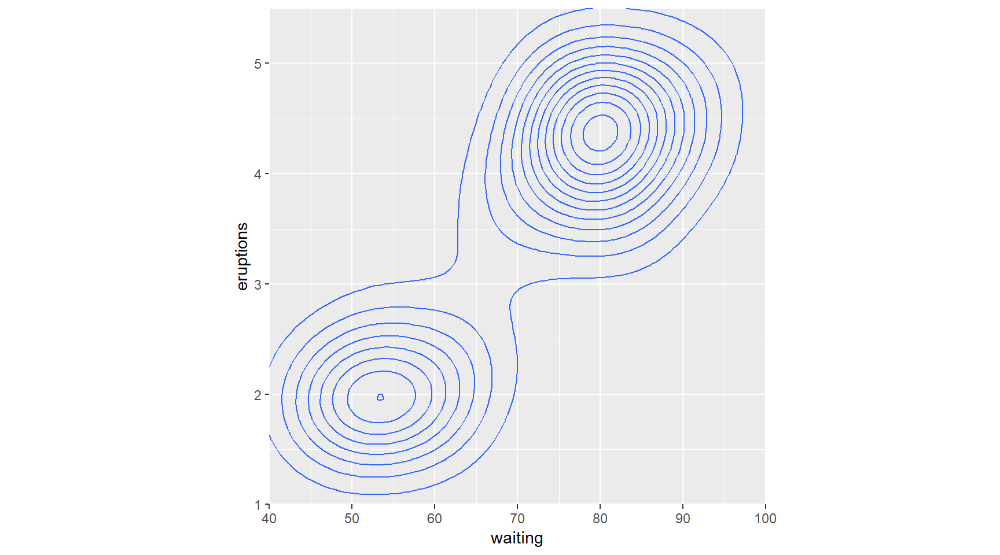
For Large Data
# pairs
pairs(iris[1:4])
# chart.Correlation
library(PerformanceAnalytics)
chart.Correlation(iris[1:4])
# ggpairs
library(GGally)
ggpairs(mtcars_fact[1:3])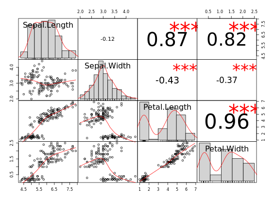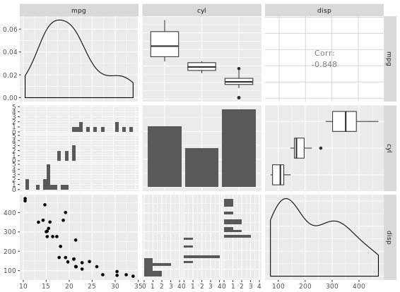
library(ggplot2)
library(reshape2)
cor_list <- function(x) {
L <- M <- cor(x)
M[lower.tri(M, diag = TRUE)] <- NA
M <- melt(M)
names(M)[3] <- "points"
L[upper.tri(L, diag = TRUE)] <- NA
L <- melt(L)
names(L)[3] <- "labels"
merge(M, L)
}
# Calculate xx with cor_list
library(dplyr)
xx <- iris %>%
group_by(Species) %>%
do(cor_list(.[1:4]))
# Finish the plot
ggplot(xx, aes(x = Var1, y = Var2)) +
geom_point(aes(col = points, size = abs(points)), shape = 16) +
geom_text(aes(col = labels, size = abs(labels), label = round(labels, 2))) +
scale_size(range = c(0, 6)) +
scale_color_gradient("r", limits = c(-1, 1)) +
scale_y_discrete("", limits = rev(levels(xx$Var1))) +
scale_x_discrete("") +
guides(size = FALSE) +
geom_abline(slope = -1, intercept = nlevels(xx$Var1) + 1) +
coord_fixed() +
facet_grid(. ~ Species) +
theme(axis.text.y = element_text(angle = 45, hjust = 1),
axis.text.x = element_text(angle = 45, hjust = 1),
strip.background = element_blank())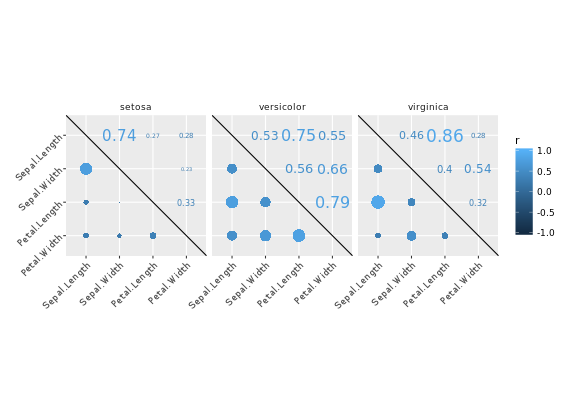
Ternary or Triangle Plot
# Add an ID column from the row.names
africa_sample$ID <- row.names(africa_sample)
# Gather africa_sample
library(tidyr)
africa_sample_tidy <- gather(africa_sample, key, value, -ID)
head(africa_sample_tidy)
# Finish the ggplot command
ggplot(africa_sample_tidy, aes(x = factor(ID), y = value, fill = key)) +
geom_col() +
coord_flip()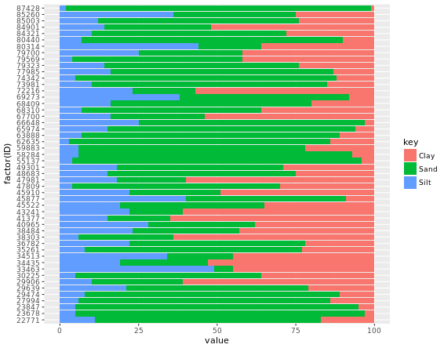
# Load ggtern
library(ggtern)
# Build ternary plot
ggtern(africa, aes(x = Sand, y = Silt, z = Clay)) +
geom_point(shape = 16, alpha = 0.2)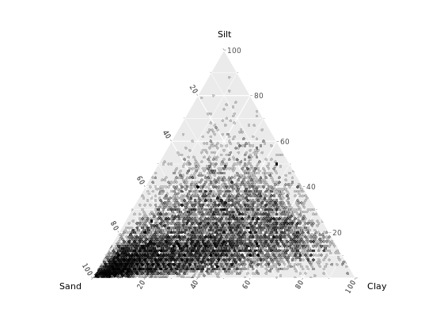
Adjust ternary plots
Ternary plots have been around for a while in R; you could achieve the same thing with the vcd package authored by Michael Friendly. If you just need a quick and dirty ternary plot, that may suit you just fine. However, since ggtern is built on ggplot2, you can take advantage of all the tools available therein.
# Contour plot
ggtern(africa, aes(x = Sand, y = Silt, z = Clay)) +
geom_density_tern()
# Density olot which i prefer
ggtern(africa, aes(x = Sand, y = Silt, z = Clay)) +
stat_density_tern(geom = "polygon", aes(fill = ..level.., alpha = ..level..)) +
guides(fill = FALSE)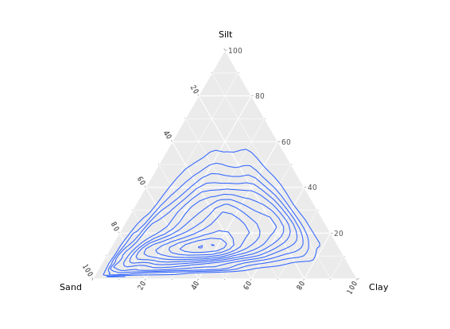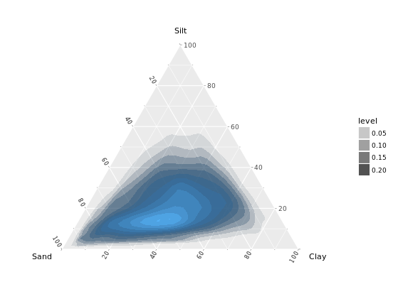
Build the network
Merge edges and vertices
mmnet <- merge(madmen\(edges, madmen\)vertices, by.x = “Name1”, by.y = “label”, all = TRUE) # Finish the ggplot command ggplot(data = mmnet, aes(from_id = Name1, to_id = Name2)) + geom_net(aes(col = Gender), size = 6, linewidth = 1, labelon = TRUE, fontsize = 3, labelcolour = “black”)
# Merge edges and vertices
mmnet <- merge(madmen$edges, madmen$vertices,
by.x = "Name1", by.y = "label",
all = TRUE)
# Finish the ggplot command
ggplot(data = mmnet, aes(from_id = Name1, to_id = Name2)) +
geom_net(aes(col = Gender), size = 6, linewidth = 1, labelon = TRUE, fontsize = 3, labelcolour = "black")
Adjusting the network
# Node colors
pink_and_blue <- c(female = "#FF69B4", male = "#0099ff")
# Tweak the network plot
ggplot(data = mmnet, aes(from_id = Name1, to_id = Name2)) +
geom_net(aes(col = Gender),
size = 6,
linewidth = 1,
labelon = TRUE,
fontsize = 3,
labelcolour = "black",
# Make the graph directed
directed = TRUE) +
# Add manual color scale
scale_color_manual(values = pink_and_blue) +
# Set x-axis limits
xlim(-0.05, 1.05) +
# Set void theme
theme_void() # remove all background elements like axes and grid lines to make a clean network plot
Diagnostic Plots
R has several plotting methods for specific objects. For example using plot() on the results of an lm() call results in four plots that give you insight into how well the assigned model fits the data.
The ggfortify package is an all-purpose plot converter between base graphics and ggplot2 grid graphics. For now, just know that if you want to use the automatic output features in the context of ggplot2, they must first be converted to a ggplot object via ggfortify. This can be important at the superficial level, for consistency in appearance, but also at a deeper level, for later combining several plots in a single graphics device.
# Create linear model: res
res <- lm(Volume ~ Girth, data = trees)
# Plot res
plot(res) # four figures seperated
# Import ggfortify and use autoplot()
library(ggfortify)
library(ggplot2)
autoplot(res, ncol = 2)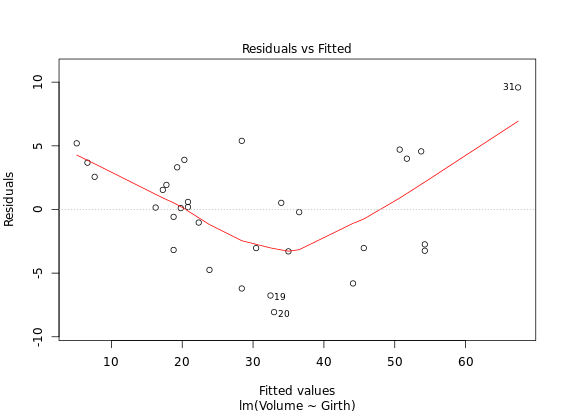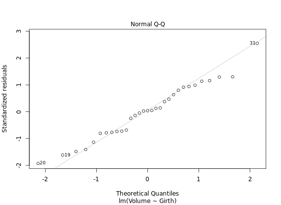
**ggfortify - time series
# Call plot() on Canada
plot(Canada)
# Call autoplot() on Canada
autoplot(Canada)# Autoplot + ggplot2 tweaking
autoplot(eurodist) +
coord_fixed()
# Autoplot of MDS
autoplot(cmdscale(eurodist, eig = TRUE),
label = TRUE,
label.size = 3,
size = 0)Plotting K-means clustering
# Perform clustering
iris_k <- kmeans(iris[-5], 3)
# Autplot: color according to cluster
autoplot(iris_k, data = iris, frame = TRUE)
# Autoplot: above, plus shape according to species
autoplot(iris_k, data = iris, frame = TRUE, shape = 'Species')Time Series
xts package
The main xts constructor takes a number of arguments, but the two most important are x for the data and order.by for the index. x must be a vector or matrix. order.by is a vector which must be the same length or number of rows as x, be a proper time or date object (very important!), and be in increasing order.
# Create the object data using 5 random numbers
data <- rnorm(5)
# Create dates as a Date class object starting from 2016-01-01
dates <- seq(as.Date("2016-01-01"), length = 5, by = "days")
# Use xts() to create smith
smith <- xts(x = data, order.by = dates)
# Create bday (1899-05-08) using a POSIXct date class object
bday <- as.POSIXct("1899-05-08")
# Create hayek and add a new attribute called born
hayek <- xts(x = data, order.by = dates, born = bday)The most important of these attributes is the index. The index holds all the information we need for xts to treat our data as a time series. When working with time series, it will sometimes be necessary to separate your time series into its core data and index attributes for additional analysis and manipulation. The core data is the matrix portion of xts. You can separate this from the xts object using coredata(). The index portion of the xts object is available using the index() function. Note that both of these functions are methods from the zoo class, which xts extends.
# Extract the core data of hayek
hayek_core <- coredata(hayek)
# View the class of hayek_core
class(hayek_core) # data
# Extract the index of hayek
hayek_index <- index(hayek)
# View the class of hayek_index
class(hayek_index) # date# Create dates increasing with 1 day
dates <- as.Date("2016-01-01") + 0:4
# Create ts_a
ts_a <- xts(x = 1:5, order.by = dates)
# Create ts_b
ts_b <- xts(x = 1:5, order.by = as.POSIXct(dates))
# Extract the rows of ts_a using the index of ts_b
ts_a[index(ts_b)]
# Extract the rows of ts_b using the index of ts_a
ts_b[index(ts_a)]It is often necessary to convert between classes when working with time series data in R. Conversion can be required for many reasons, but typically you’ll be looking to use a function that may not be time series aware or you may want to use a particular aspect of xts with something that doesn’t necessarily need to be a full time series.
Luckily, it is quite easy to convert back and forth using the standard as.* style functionality provided in R (for example, as.POSIXct() or as.matrix()). xts provides methods to convert all of the major objects you are likely to come across. Suitable native R types like matrix, data.frame, and ts are supported, as well as contributed ones such as timeSeries, fts and of course zoo. as.xts() is the workhorse function to do the conversions to xts, and similar functions will provide the reverse behavior.
# 1. Create dat by reading tmp_file
dat <- read.csv(tmp_file)
# Convert dat into xts
xts(dat, order.by = as.Date(rownames(dat), "%m/%d/%Y"))
# 2. Read tmp_file using read.zoo
dat_zoo <- read.zoo(tmp_file, index.column = 0, sep = ",", format = "%m/%d/%Y")
# Convert dat_zoo to xts
dat_xts <- as.xts(dat_zoo)There are two main use cases for exporting xts objects. First, you may require an object to persist across sessions for use in later analysis. In this case, it is almost always best to use saveRDS() and readRDS() to serialize single R objects. Alternatively, you may find yourself needing to share the results of your analysis with others, often expecting the data to be consumed by processes unaware of both R and xts. Most of us would prefer not to think of this horrible fate for our data, but the real world mandates that we at least understand how this works. One of the best ways to write an xts object from R is to use the zoo function write.zoo().
data("sunspots")
library(xts)
library(zoo)
# Convert sunspots to xts using as.xts().
sunspots_xts <- as.xts(sunspots)
# Get the temporary file name
tmp <- tempfile()
# Write the xts object using zoo to tmp
write.zoo(sunspots_xts, sep = ",", file = tmp)
# Read the tmp file. FUN = as.yearmon converts strings such as Jan 1749 into a proper time class
sun <- read.zoo(tmp, sep = ",", FUN = as.yearmon)
# Convert sun into xts. Save this as sun_xts
sun_xts <- as.xts(sun)One of the most powerful aspects of working with time series in xts is the ability to quickly and efficiently specify dates and time ranges for subsetting. Date ranges can be extracted from xts objects by simply specifying the period(s) you want using special character strings in your subset.
A["20090825"] # Aug 25, 2009
A["201203/201212"] # Mar to Dec 2012
A["/201601"] # Up to and including January 2016The most common time series data “in the wild” is daily. On occasion, you may find yourself working with intraday data, which contains both dates and times. In this case it is sometimes necessary to view only a subset of time for each day over multiple days. Using xts, you can slice days easily by using special notation in the i = argument to the single bracket extraction (i.e. [i, j]).
# Extract all data from irreg between 8AM and 10AM
morn_2010 <- irreg["T08:00/T10:00"]
# Extract the observations in morn_2010 for January 13th, 2010
morn_2010["2010-01-13"]Sometimes you need to locate data by relative time. Something that is easier said than put into code. This is equivalent to requesting the head or tail of a series, but instead of using an absolute offset, you describe a relative position in time. A simple example would be something like the last 3 weeks of a series, or the first day of current month. Without a time aware object, this gets quite complicated very quickly. Luckily, xts has the necessary prerequisites built in for you to use with very little learning required. Using the first() and last() functions it is actually quite easy!
# Create lastweek using the last 1 week of temps
lastweek <- last(temps, "1 week")
# Print the last 2 observations in lastweek
last(lastweek, 2)
# Extract all but the first two days of lastweek
first(lastweek, "-2 days")Combining first and last
# Extract the first three days of the second week of temps
first(last(first(temps, "2 weeks"), "1 week"), "3 days")xts makes it easy to join data by column and row using a few different functions. All results will be correctly ordered in time, regardless of original frequencies or date class. One of the most important functions to accomplish this is merge(). It takes one or more series and joins them by column. It’s also possible to combine a series with a vector of dates. This is especially useful for normalizing observations to a fixed calendar.merge() takes three key arguments which we will emphasize here. First is the ..., which lets you pass in an arbitrary number of objects to combine. The second argument is join, which specifies how to join the series - accepting arguments such as inner or left. This is similar to a relational database join, only here, the index is what we join on. The final argument for this exercise is fill. This keyword specifies what to do with the new values in a series if there is missingness introduced as a result of the merge.
# Basic argument use
merge(a, b, join = "right", fill = 9999)Now that you have merged data by column, you will be happy to know it’s just as easy to add new rows to your data. xts provides its own S3 method to the base rbind() generic function. The xts rbind function is much simpler than merge(). The only argument that matters is ..., which takes an arbitrary number of objects to bind. What is different is that rbind requires a time series, since we need to have timestamps for R to know where to insert new data.
# Row bind temps_june30 to temps, assign this to temps2
temps2 <- rbind(temps_june30, temps)
# Row bind temps_july17 and temps_july18 to temps2, call this temps3
temps3 <- rbind(temps_july17, temps_july18, temps2)Fill missing values using last or previous observation As you’ve encountered already, it’s not uncommon to find yourself with missing values (i.e. NAs) in your time series. This may be the result of a data omission or some mathematical or merge operation you do on your data. you will use the most basic of these, na.locf(). This function takes the last observation carried forward approach. In most circumstances this is the correct thing to do. It both preserves the last known value and prevents any look-ahead bias from entering into the data. You can also apply next observation carried backward by setting fromLast = TRUE.
# Last obs. carried forward
na.locf(x)
# Next obs. carried backward
na.locf(x, fromLast = TRUE) On occasion, a simple carry forward approach to missingness isn’t appropriate. It may be that a series is missing an observation due to a higher frequency sampling than the generating process. You might also encounter an observation that is in error, yet expected to be somewhere between the values of its neighboring observations. These are scenarios where interpolation is useful. zoo provides a powerful tool to do this. Based on simple linear interpolation between points, implemented with na.approx() the data points are approximated using the distance between the index values. In other words, the estimated value is linear in time.
# Interpolate NAs using linear approximation
na.approx(AirPass)Combine a leading and lagging time series Both zoo and xts implement this behavior, and in fact extend it from the ts original in R. There are two major differences between xts and zoo implementations that you need to be aware of. One is the direction of the lag for a given k. The second is how missingness is handled afterwards.
For historical reasons in R, zoo uses a convention for the sign of k in which negative values indicate lags and positive values indicate leads. That is, in zoo lag(x, k = 1) will shift future values one step back in time. This is inconsistent with the vast majority of the time series literature, but is consistent with behavior in base R. xts implements the exact opposite, namely for a positive k, the series will shift the last value in time one period forward; this is consistent with intuition, but quite different than zoo.
# Create a leading object called lead_x
lead_x <- lag(x, k = -1)
# Create a lagging object called lag_x
lag_x <- lag(x, k = 1)
# Merge your three series together and assign to z
z <- merge(lead_x, x, lag_x)Calculate a difference of a series using diff(). Another common operation on time series, typically on those that are non-stationary, is to take a difference of the series. The number of differences to take of a series is an application of recursively calling the difference function n times.
A simple way to view a single (or “first order”) difference is to see it as x(t) - x(t-k) where k is the number of lags to go back. Higher order differences are simply the reapplication of a difference to each prior result. In R, the difference operator for xts is made available using the diff() command. This function takes two arguments of note. The first is the lag, which is the number of periods, and the second is differences, which is the order of the difference (e.g. how many times diff() is called).
# These are the same
diff(x, differences = 2)
diff(diff(x))# Calculate the first difference of AirPass using lag and subtraction
diff_by_hand <- AirPass - lag(AirPass)
# Use merge to compare the first parts of diff_by_hand and diff(AirPass)
merge(head(diff_by_hand), head(diff(AirPass)))
# Calculate the first order 12 month difference of AirPass
diff(AirPass, lag = 12, differences = 1)One of the benefits to working with time series objects is how easy it is to apply functions by time. The main function in xts to facilitate this is endpoints(). It takes a time series (or a vector of times) and returns the locations of the last observations in each interval. The argument on supports a variety of periods, including "years", "quarters", "months", as well as intraday intervals such as "hours", and "minutes". What is returned is a vector starting with 0 and ending with the extent (last row) of your data.
# Locate the end of week in temps data
endpoints(temps, on = "weeks")
# Locate the end of every second week
endpoints(temps, on = "weeks", k = 2)Make use of the xts split() command to chunk your data by time. The split() function creates a list containing an element for each split. The f argument in split() is a character string describing the period to split by (i.e. "months", "years", etc.).
# Split temps by week
temps_weekly <- split(temps, f = "weeks")
# Create a list of weekly means, temps_avg
temps_avg <- lapply(X = temps_weekly, FUN = mean)Convert univariate series to OHLC data. You’ll convert from a univariate series into OHLC series, and then convert your final OHLC series back into a univariate series using the xts function to.period(). This function takes a time-series, x, and a string for the period (i.e. months, days, etc.), in addition to a number of other optional arguments.
to.period(x,
period = "months",
k = 1,
indexAt,
name=NULL,
OHLC = TRUE,
...)# Convert usd_eur to weekly and assign to usd_eur_weekly
usd_eur_weekly <- to.period(usd_eur, period = "weeks")
# Convert usd_eur to monthly and assign to usd_eur_monthly
usd_eur_monthly <- to.period(usd_eur, period = "months")
# Convert usd_eur to yearly univariate and assign to usd_eur_yearly, no OHLC bars
usd_eur_yearly <- to.period(usd_eur, period = "years", OHLC = FALSE)One common aggregation you may want to apply involves doing a calculation within the context of a period, but returning the interim results for each observation of the period. For example, you may want to calculate a running month-to-date cumulative sum of a series. This would be relevant when looking at monthly performance of a mutual fund you are interested in investing in. You’ll calculate the cumulative annual return using the edhec fund data from the last exercise. To do this, you’ll follow the split()-lapply()-rbind() pattern demonstrated below:
x_split <- split(x, f = "months")
x_list <- lapply(x_split, cummax)
x_list_rbind <- do.call(rbind, x_list)Note the last call uses R’s somewhat strange do.call(rbind, ...) syntax, which allows you to pass a list to rbind instead of passing each object one at a time. This is a handy shortcut for your R toolkit.
# View the first three indexes of temps
index(temps)[1:3]
# Get the index class of temps
indexClass(temps)
# Get the timezone of temps
indexTZ(temps)
# Change the format of the time display
indexFormat(temps) <- "%b-%d-%Y"One of the trickiest parts to working with time series in general is dealing with time zones. xts provides a simple way to leverage time zones on a per-series basis. While R provides time zone support in native classes POSIXct and POSIXlt, xts extends this power to the entire object, allowing you to have multiple time zones across various objects.
Some internal operation system functions require a time zone to do date math. If a time zone isn’t explicitly set, one is chosen for you! Be careful to always set a time zone in your environment to prevent errors when working with dates and times. xts provides the function tzone(), which allows you to extract or set time zones.
# Construct times_xts with tzone set to America/Chicago
times_xts <- xts(1:10, order.by = times, tzone = "America/Chicago")
# Change the time zone of times_xts to Asia/Hong_Kong
tzone(times_xts) <- "Asia/Hong_Kong"xts provides a handy tool to discover this regularity in your data by estimating the frequency of the observations - what we are referring to as periodicity - using the periodicity() command
# Calculate the periodicity of temps
periodicity(temps)
# Calculate the periodicity of edhec
periodicity(edhec)
# Convert edhec to yearly
edhec_yearly <- to.yearly(edhec)
# Calculate the periodicity of edhec_yearly
periodicity(edhec_yearly)Often it is handy to know not just the range of your time series index, but also how many discrete irregular periods your time series data covers. You shouldn’t be surprised to learn that xts provides a set of functions to do just that!
If you have a time series, it is now easy to see how many days, weeks or years your data contains. To do so, simply use the function ndays() and its shortcut functions nmonths(), nquarters(), and so forth, making counting irregular periods easy.
# Count the months
nmonths(edhec)
# Count the quarters
nquarters(edhec)
# Count the years
nyears(edhec)xts uses a very special attribute called index to provide time support to your objects. For performance and design reasons, the index is stored in a special way. This means that regardless of the class of your index (e.g. Date or yearmon) everything internally looks the same to xts. The raw index is actually a simple vector of fractional seconds since the UNIX epoch. Normally you want to access the times you stored. index() does this magically for you by using your indexClass. To get to the raw vector of the index, you can use .index(). Note the critical dot before the function name. More useful than extracting raw seconds is the ability to extract time components similar to the POSIXlt class, which closely mirrors the underlying POSIX internal compiled structure tm. This functionality is provided by a handful of commands such as .indexday(), .indexmon(), .indexyear(), and more.
# Explore underlying units of temps in two commands: .index() and .indexwday()
.index(temps)
.indexwday(temps)
# Create an index of weekend days using which()
index <- which(.indexwday(temps) == 6 | .indexwday(temps) == 0)
# Select the index
temps[index]If you find that you have observations with identical timestamps, it might be useful to perturb or remove these times to allow for uniqueness. xts provides the function make.index.unique() for just this purpose. The eps argument, short for epsilon or small change, controls how much identical times should be perturbed, and drop = TRUE lets you just remove duplicate observations entirely.
On other ocassions you might find your timestamps a bit too precise. In these instances it might be better to round up to some fixed interval, for example an observation may occur at any point in an hour, but you want to record the latest as of the beginning of the next hour. For this situation, the align.time() command will do what you need, setting the n argument to the number of seconds you’d like to round to.
make.index.unique(x, eps = 1e-4) # Perturb
make.index.unique(x, drop = TRUE) # Drop duplicates
align.time(x, n = 60) # Round to the minute# Make z have unique timestamps
z_unique <- make.index.unique(z, eps = 1e-4)
# Remove duplicate times in z
z_dup <- make.index.unique(z, drop = TRUE)
# Round observations in z to the next hour
z_round <- align.time(z, n = 3600)Basic time series plot
While simple commands such as print(), length(), head(), and tail() provide crucial information about your time series data, another very useful way to explore any data is to generate a plot.
# Plot the Nile data with xlab and ylab arguments
plot(Nile, xlab = "Year", ylab = "River Volume (1e9 m^{3})")
# Plot the Nile data with xlab, ylab, main, and type arguments
plot(Nile, xlab = "Year", ylab = "River Volume (1e9 m^{3})", main = "Annual River Nile Volume at Aswan, 1871-1970", type ="b")The start() and end() functions return the time index of the first and last observations, respectively. The time() function calculates a vector of time indices, with one element for each time index on which the series was observed.
The deltat() function returns the fixed time interval between observations and the frequency() function returns the number of observations per unit time. Finally, the cycle() function returns the position in the cycle of each observation.
The function ts() can be applied to create time series objects. A time series object is a vector (univariate) or matrix (multivariate) with additional attributes, including time indices for each observation, the sampling frequency and time increment between observations, and the cycle length for periodic data. Such objects are of the ts class, and represent data that has been observed at (approximately) equally spaced time points.
# Use print() and plot() to view data_vector
plot(data_vector)
# Convert data_vector to a ts object with start = 2004 and frequency = 4
time_series <- ts(data_vector, start = 2004, frequency = 4)
# Use print() and plot() to view time_series
plot(time_series)

When you use datasets from others, such as those included in an R package, you can check whether they are ts objects using the is.ts() command. The result of the test is either TRUE when the data is of the ts class, or FALSE if it is not.
For time series exhibiting seasonal trends, seasonal differencing can be applied to remove these periodic patterns. For example, monthly data may exhibit a strong twelve month pattern. In such situations, changes in behavior from year to year may be of more interest than changes from month to month, which may largely follow the overall seasonal pattern.
The function diff(..., lag = s) will calculate the lag s difference or length s seasonal change series. For monthly or quarterly data, an appropriate value of s would be 12 or 4, respectively. The diff() function has lag = 1 as its default for first differencing. Similar to before, a seasonally differenced series will have s fewer observations than the original series.
# Generate a diff of x with lag = 4. Save this to dx
dx <- diff(x, lag = 4)
# Plot dx
ts.plot(dx)Simulate the white noise model
The white noise (WN) model is a basic time series model. It is also a basis for the more elaborate models we will consider. We will focus on the simplest form of WN, independent and identically distributed data. The arima.sim() function can be used to simulate data from a variety of time series models. ARIMA is an abbreviation for the autoregressive integrated moving average class of models. An ARIMA(p, d, q) model has three parts, the autoregressive order p, the order of integration (or differencing) d, and the moving average order q. For now we note that the ARIMA(0, 0, 0) model, i.e., with all of these components zero, is simply the WN model.
# Simulate a WN model with list(order = c(0, 0, 0))
white_noise <- arima.sim(model = list(order = c(0, 0, 0)), n = 100)
# Plot your white_noise data
ts.plot(white_noise)
# Simulate from the WN model with: mean = 100, sd = 10
white_noise_2 <- arima.sim(model = list(order = c(0, 0, 0)), n = 100, mean = 100, sd = 10)
# Plot your white_noise_2 data
ts.plot(white_noise_2)Simulate the random walk model
The random walk (RW) model is also a basic time series model. It is the cumulative sum (or integration) of a mean zero white noise (WN) series, such that the first difference series of a RW is a WN series. Note for reference that the RW model is an ARIMA(0, 1, 0) model, in which the middle entry of 1 indicates that the model’s order of integration is 1. The arima.sim() function can be used to simulate data from the RW by including the model = list(order = c(0, 1, 0)) argument. We also need to specify a series length n. Finally, you can specify a sd for the series (increments), where the default value is 1.
# Generate a RW model using arima.sim
random_walk <- arima.sim(model = list(order = c(0, 1, 0)), n = 100)
# Plot random_walk
ts.plot(random_walk)
# Calculate the first difference series
random_walk_diff <- diff(random_walk)
# Plot random_walk_diff
ts.plot(random_walk_diff)